Register Summary
General Address Space Definitions
MMIO Address Space (TRIO_MMIO_ADDRESS_SPACE: 0x0000-0x3ffffffffff)
The MMIO physical address space for the TRIO is described below. This is a general description of the MMIO space as opposed to a register description| Bits | Name | Type | Reset | Description
| 36:32 | REGION | RW | 0 | This field of the address selects the region to be accessed. |
31:0 | OFFSET | RW | 0 | This field of the address provides an offset into the region being accessed. | |
|---|
MMIO Region - Configuration Space Data Description (TRIO_CFG_REGION_VAL: 0x0000-0xffff)
Provides access to config registers. See CFG_REGION_ADDR for address definition.
| Bits | Name | Type | Reset | Description
| 63:0 | DATA | RW | 0 | Configuration read/write data | |
|---|
Configuration Space Address Definition (TRIO_CFG_REGION_ADDR: 0x0000-0xffff)
This is a general description of the MMIO space as opposed to a register description.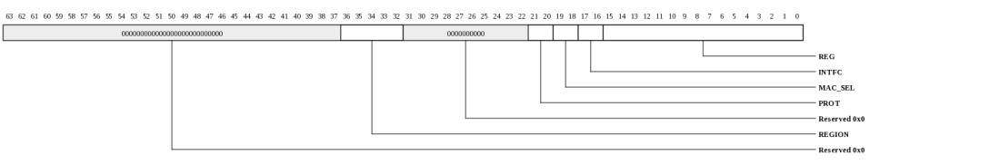
| Bits | Name | Type | Reset | Description
| 36:32 | REGION | RW | 0 | Selects CFG_SPACE | 21:20 | PROT | RW | 0 | Protection level. Setting to 0 or 1 allows access to all registers. Setting to 2 denies access to registers at level 2. Setting to 3 denies access to registers at levels 1 and 2. | 19:18 | MAC_SEL | RW | 0 | Selects the MAC being accessed when INTFC is not TRIO. | 17:16 | INTFC | RW | 0 | Interface being accessed. |
15:0 | REG | RW | 0 | Configuration register to be accessed. Note that TRIO and MAC_INTERFACE registers are always aligned on 8-byte boundaries and access is always 8-bytes at a time. MAC registers are 4-byte oriented. | |
|---|
MMIO Region - Push DMA Post/Head Data Description (TRIO_PUSH_DMA_REGION_VAL: 0x100000000-0x1ffffffff)
Used to post descriptor locations to the push DMA descriptor engine and read the current ring's head pointer. The address format for this address space is defined in PUSH_DMA_REGION_ADDR.
| Bits | Name | Type | Reset | Description
| 32 | GEN | RW | 0 | For writes, this specifies the generation number of the tail being posted. Note that if tail+cnt wraps to the beginning of the ring, the push_dma hardware assumes that the descriptors posted at the beginning of the ring are also valid so it is okay to post around the wrap point. | For reads, this is the current generation number. Valid descriptors will have the inverse of this generation number. 31:16 | COUNT | RW | 0 | For writes, this specifies number of contiguous descriptors that are being posted. Software may post up to RingSize descriptors with a single MMIO store. | For reads, this field provides a rolling count of the number of descriptors that have been completely processed. This may be used by software to determine when buffers associated with a descriptor may be returned or reused and when flags may be posted to the MAC via PIO or other mechanisms. This count, and the associated PUSH_DMA interrupt, update when the final packet for a descriptor has reached the ordering point for TRIO. Thus subsequent PIOs, MAP-mem completions, pull and push DMA transactions will be sent to the MAC interface after the final packet is sent to the MAC. 15:0 | RING_IDX | RW | 0 | For writes, this specifies the current ring tail pointer prior to any post. For example, to post 1 or more descriptors starting at location 23, this would contain 23 (not 24). On writes, this index must be masked based on the ring size. The new tail pointer after this post is COUNT+RING_IDX (masked by the ring size). | For reads, this provides the hardware descriptor fetcher's head pointer. The descriptors prior to the head pointer, however, may not yet have been processed so this indicator is only used to determine how full the ring is and if software may post more descriptors. |
|---|
MMIO Region - Push DMA Post/Head Address Description (TRIO_PUSH_DMA_REGION_ADDR: 0x100000000-0x1ffffffff)
Address format for the PUSH_DMA_REGION. This is an address definition as opposed to a register description.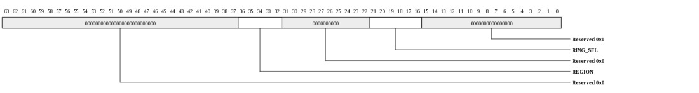
| Bits | Name | Type | Reset | Description
| 36:32 | REGION | RW | 1 | Selects PUSH_DMA | 21:16 | RING_SEL | RW | 0 | Push DMA ring being accessed | |
|---|
MMIO Region - Pull DMA Post/Head Data Description (TRIO_PULL_DMA_REGION_VAL: 0x200000000-0x2ffffffff)
Used to post descriptor locations to the pull DMA descriptor engine and read the current ring's head pointer. The address format for this address space is defined in PUSH_DMA_REGION_ADDR.| Bits | Name | Type | Reset | Description
| 32 | GEN | RW | 0 | For writes, this specifies the generation number of the tail being posted. Note that if tail+cnt wraps to the beginning of the ring, the pull_dma hardware assumes that the descriptors posted at the beginning of the ring are also valid so it is okay to post around the wrap point. | For reads, this is the current generation number. Valid descriptors will have the inverse of this generation number. 31:16 | COUNT | RW | 0 | For writes, this specifies number of contiguous descriptors that are being posted. Software may post up to RingSize descriptors with a single MMIO store. | For reads, this field provides a rolling count of the number of descriptors that have been completely processed. This may be used by software to determine when the PULL_DMA data associated with the descriptor is visible in Tile memory space. 15:0 | RING_IDX | RW | 0 | For writes, this specifies the current ring tail pointer prior to any post. For example, to post 1 or more descriptors starting at location 23, this would contain 23 (not 24). On writes, this index must be masked based on the ring size. The new tail pointer after this post is COUNT+RING_IDX (masked by the ring size). | For reads, this provides the hardware descriptor fetcher's head pointer. The descriptors prior to the head pointer, however, may not yet have been processed so this indicator is only used to determine how full the ring is and if software may post more descriptors. |
|---|
MMIO Region - Pull DMA Post/Head Address Description (TRIO_PULL_DMA_REGION_ADDR: 0x200000000-0x2ffffffff)
Address format for the PULL_DMA_REGION. This is an address definition as opposed to a register description.
| Bits | Name | Type | Reset | Description
| 36:32 | REGION | RW | 2 | Selects PULL_DMA | 21:16 | RING_SEL | RW | 0 | Pull DMA ring being accessed | |
|---|
MMIO Region - Map SQ Region Write Data Description (TRIO_MAP_SQ_REGION_WRITE_VAL: 0x300000000-0xaffffffff)
Provides descriptor-write access. Reads to this register are described by MAP_SQ_REGION_READ_VAL. Each SQ provides storage for up to 64 descriptors. Software is responsible for not overflowing the descriptor FIFO. The INT bit may be used to indicate when space has become available in the descriptor FIFO.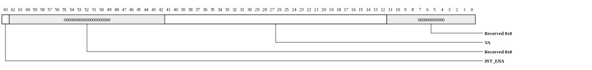
| Bits | Name | Type | Reset | Description
| 63 | INT_ENA | WO | 0 | Indicates that an interrupt is requested when this descriptor is dequeued. | 41:12 | VA | WO | 0 | 4 kB-aligned VA to be used on incoming MAP_SQ writes. The VA for an incoming write will be IO_ADDRESS - MAP_SQ_BASE + VA. | |
|---|
MMIO Region - Map SQ Region Read Data Description (TRIO_MAP_SQ_REGION_READ_VAL: 0x300000000-0xaffffffff)
Provides descriptor FIFO status on read. Writes to this register are described by MAP_SQ_REGION_WRITE_VAL.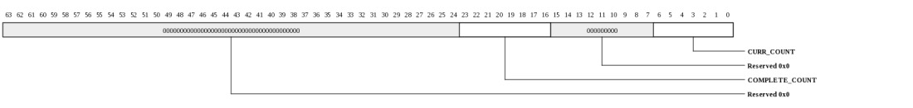
| Bits | Name | Type | Reset | Description
| 23:16 | COMPLETE_COUNT | RO | 0 | Rolling count of the number of descriptors that have been completely processed and are coherent. | 6:0 | CURR_COUNT | RO | 0 | Number of descriptors currently in the FIFO. | |
|---|
MMIO Region - SQ Region Address Description (TRIO_MAP_SQ_REGION_ADDR: 0x300000000)
This is not a register, but rather a description of how the MMIO address is interpreted for accesses to the MAP_SQ_REGION.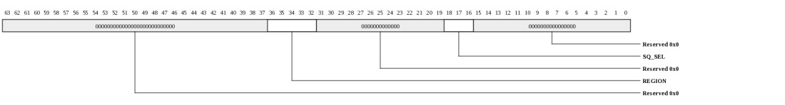
| Bits | Name | Type | Reset | Description
| 36:32 | REGION | RW | 3 | MMIO Region Select (3) | 18:16 | SQ_SEL | RW | 0 | Scatter Queue Select. Selects which of the 8 map SQ region is being accessed. | |
|---|
MMIO Region - Tile PIO Data Description (TRIO_PIO_REGIONS_VAL: 0x800000000-0xfffffffff)
Used to map Tile MMIO space into MAC IO address space. The address of the MMIO operation is added to the base address from the associated TILE_PIO_REGION_SETUP register.| Bits | Name | Type | Reset | Description
| 63:0 | PIO_REGIONS_VAL | RW | 0 | Used to map Tile MMIO space into MAC IO address space. The address of the MMIO operation is added to the base address from the associated TILE_PIO_REGION_SETUP register. | |
|---|
MMIO Region - Tile PIO Address Description (TRIO_PIO_REGIONS_ADDR: 0x800000000-0xfffffffff)
Address format for the PIO_REGIONS. This is an address definition as opposed to a register description.| Bits | Name | Type | Reset | Description
| 36:32 | REGION | RW | 8 | Selects one of the PIO_REGIONS. 8 selects region-0. 15 selects region-8. | 31:0 | ADDR | RW | 0 | The address of the MMIO operation is added to the base address from the associated TILE_PIO_REGION_SETUP register to form the IO address. | |
|---|
MMIO Region - Map Mem Region Data Description (TRIO_MAP_MEM_REGION_VAL: 0x1000000000-0x17ffffffff)
Provides access to the map mem interrupt registers. The individual register formats are described in the MAP_MEM_REG_INT* registers.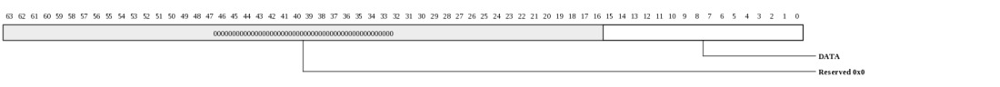
| Bits | Name | Type | Reset | Description
| 15:0 | DATA | RW | 0 | Data is interpreted based on the individual register being accessed. | |
|---|
MMIO Region - Map Mem Register Int0 (TRIO_MAP_MEM_REG_INT0: 0x1000000000)
Provides read/write access to the map mem interrupt vector
| Bits | Name | Type | Reset | Description
| 15:0 | INT_VEC | RW | 0 | Interrupt state. Returns current value on read. Writes update all bits to match write data. | |
|---|
MMIO Region - Map Mem Region Address Description (TRIO_MAP_MEM_REGION_ADDR: 0x1000000000)
This is not a register, but rather a description of how the MMIO address is interpreted for accesses to the MAP_MEM_REGION.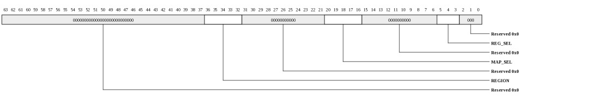
| Bits | Name | Type | Reset | Description
| 36:32 | REGION | RW | 10h | MMIO Region Select (16) | 20:16 | MAP_SEL | RW | 0 | Map Mem Select. Selects which of the map regions is being accessed. | 5:3 | REG_SEL | RW | 0 | Register select. | |
|---|
MMIO Region - Map Mem Register Int1 (TRIO_MAP_MEM_REG_INT1: 0x1000000008)
Provides read-clear/write-one-to-clear access to the map mem interrupt vector
| Bits | Name | Type | Reset | Description
| 15:0 | INT_VEC | RW | 0 | Interrupt state. Returns current value on read then clears all bits. On a write, a write-value of 1 clears the associated bit. A write-value of 0 leaves the current bit intact. | |
|---|
MMIO Region - Map Mem Register Int2 (TRIO_MAP_MEM_REG_INT2: 0x1000000010)
Provides read/write-one-to-set access to the map mem interrupt vector
| Bits | Name | Type | Reset | Description
| 15:0 | INT_VEC | RW | 0 | Interrupt state. Returns current value on read. On a write, a write-value of 1 sets the associated bit. A write-value of 0 leaves the current bit intact. | |
|---|
MMIO Region - Map Mem Register Int3 (TRIO_MAP_MEM_REG_INT3: 0x1000000018)
Provides read/set-bit access to the map mem interrupt vector
| Bits | Name | Type | Reset | Description
| 15:0 | INT_VEC | RW | 0 | Interrupt state. Returns current value on read. On a write, the bit indexed by INT[3:0] will be set and other bits will be left intact. | |
|---|
MMIO Region - Map Mem Register Int0 (TRIO_MAP_MEM_REG_INT4: 0x1000000020)
Provides read/write access to the map mem interrupt vector (does not generate Tile interrupts that are in one of the "edge" modes.)| Bits | Name | Type | Reset | Description
| 15:0 | INT_VEC | RW | 0 | Interrupt state. Returns current value on read. Writes update all bits to match write data. (does not generate Tile interrupts that are in one of the "edge" modes.) | |
|---|
MMIO Region - Map Mem Register Int1 (TRIO_MAP_MEM_REG_INT5: 0x1000000028)
Provides read-clear/write-one-to-clear access to the map mem interrupt vector (does not generate Tile interrupts that are in one of the "edge" modes.)
| Bits | Name | Type | Reset | Description
| 15:0 | INT_VEC | RW | 0 | Interrupt state. Returns current value on read then clears all bits. On a write, a write-value of 1 clears the associated bit. A write-value of 0 leaves the current bit intact. (does not generate Tile interrupts that are in one of the "edge" modes.) | |
|---|
MMIO Region - Map Mem Register Int2 (TRIO_MAP_MEM_REG_INT6: 0x1000000030)
Provides read/write-one-to-set access to the map mem interrupt vector (does not generate Tile interrupts that are in one of the "edge" modes.)
| Bits | Name | Type | Reset | Description
| 15:0 | INT_VEC | RW | 0 | Interrupt state. Returns current value on read. On a write, a write-value of 1 sets the associated bit. A write-value of 0 leaves the current bit intact. (does not generate Tile interrupts that are in one of the "edge" modes.) | |
|---|
MMIO Region - Map Mem Register Int3 (TRIO_MAP_MEM_REG_INT7: 0x1000000038)
Provides read/set-bit access to the map mem interrupt vector (does not generate Tile interrupts that are in one of the "edge" modes.)
| Bits | Name | Type | Reset | Description
| 15:0 | INT_VEC | RW | 0 | Interrupt state. Returns current value on read. On a write, the bit indexed by INT[3:0] will be set and other bits will be left intact. (does not generate Tile interrupts that are in one of the "edge" modes.) | |
|---|
Register Definitions
Device Info (TRIO_DEV_INFO: 0x0000)
This register provides general information about the device attached to this port and channel.
| Bits | Name | Type | Reset | Description
| 35:32 | INSTANCE | RO | HW | Instance ID for multi-instantiated devices. | 27:24 | REGISTER_REV | RO | 0 | Register format architectural revision. | 23:16 | DEVICE_REV | RO | HW | Device revision ID. | 11:0 | TYPE | RO | 014h | Encoded device Type - 0x14 to indicate TRIO |
|
|---|
Device Control (TRIO_DEV_CTL: 0x0008)
This register provides general device control.This register is protected at level 2

| Bits | Name | Type | Reset | Description
| 3 | SDN_ROUTE_ORDER | RW | 0 | When 1, packets sent on the SDN will be routed x-first. When 0, packets will be routed y-first. This setting must match the setting in the Tiles. Devices may have additional interfaces with customized route-order settings used in addition to or instead of this field. | 2 | RDN_ROUTE_ORDER | RW | 1 | When 1, packets sent on the RDN will be routed x-first. When 0, packets will be routed y-first. This setting must match the setting in the Tiles. Devices may have additional interfaces with customized route-order settings used in addition to or instead of this field. | |
|---|
MMIO Info (TRIO_MMIO_INFO: 0x0010)
This register provides information about how the physical address is interpreted by the IO device. The PA is divided into {CHANNEL,SVC_DOM,IGNORED,REGION,OFFSET}. The values in this register define the size of each of these fields.
| Bits | Name | Type | Reset | Description
| 40:35 | REGION_WIDTH | RO | 5 | Size of the REGION field for this channel. The LSBs of the physical address are interpreted as {REGION,OFFSET} | 34:29 | OFFSET_WIDTH | RO | 32 | Size of the OFFSET field for this channel. The LSBs of the physical address are interpreted as {REGION,OFFSET} | 28:22 | NUM_SVC_DOM | RO | 0 | Number of service domains associated with this channel. | 21:19 | SVC_DOM_WIDTH | RO | 0 | Number of bits of service-domain specifier for this channel. The MSBs of the physical addrress are interpreted as {channel, service-domain} | 18:4 | NUM_CH | RO | 1 | Each configuration channel is mapped to a packet device (MAC) having its own config registers. Mapping TBD | 3:0 | CH_WIDTH | RO | 0 | Number of bits of channel specifier for all channels. The MSBs of the physical addrress are interpreted as {channel, service-domain} | |
|---|
Memory Info (TRIO_MEM_INFO: 0x0018)
This register provides information about memory setup required for this device.
| Bits | Name | Type | Reset | Description
| 55:48 | NUM_TLB_ENT | RO | 16 | Number of IO TLB entries per ASID. | 47:40 | NUM_ASIDS | RO | 32 | Number of ASIDS supported if this device has an IO TLB (otherwise this field is zero). | 35:32 | NUM_HFH_TBL | RO | 3 | Number of hash-for-home tables that must be configured for this channel. | 31:0 | REQ_PORTS | RO | 32768 | Each bit represents a request (QDN) port on the tile fabric. Bit[15] represents the QDN port used for device configuration and is always set for devices implemented on channel-0. Bit[14] is the first port clockwise from the port used to access configuration space. Bit[13] is the second port in the clockwise direction. Bit[16] is the first port counter-clockwise from the port used to access configuration space. When a bit is set, the device has a QDN port at the associated location. For devices using a nonzero channel, this register may return all zeros. | |
|---|
Scratchpad (TRIO_SCRATCHPAD: 0x0020)
Scratchpad
| Bits | Name | Type | Reset | Description
| 63:0 | SCRATCHPAD | RW | 0 | Scratchpad | |
|---|
Semaphore0 (TRIO_SEMAPHORE0: 0x0028)
Semaphore
| Bits | Name | Type | Reset | Description
| 0 | VAL | RW | 0 | When read, the current semaphore value is returned and the semaphore is set to 1. Bit can also be written to 1 or 0. | |
|---|
Semaphore1 (TRIO_SEMAPHORE1: 0x0030)
SemaphoreThis register is protected at level 1

| Bits | Name | Type | Reset | Description
| 0 | VAL | RW | 0 | When read, the current semaphore value is returned and the semaphore is set to 1. Bit can also be written to 1 or 0. | |
|---|
Clock Count (TRIO_CLOCK_COUNT: 0x0038)
Clock Count
| Bits | Name | Type | Reset | Description
| 15:1 | COUNT | RO | 0 | Indicates the number of core clocks that were counted during 1000 device clock periods. Result is accurate to within +/-1 core clock periods. | 0 | RUN | RW | 0 | When 1, the counter is running. Cleared by HW once count is complete. When written with a 1, the count sequence is restarted. Counter runs automatically after reset. Software must poll until this bit is zero, then read the CLOCK_COUNT register again to get the final COUNT value. | |
|---|
MMIO HFH Table Init Control (TRIO_HFH_INIT_CTL: 0x0050)
Initialization control for the hash-for-home tables. During initialization, all tables may be written simultaneously by setting STRUCT_SEL to ALL. If access to the tables is required after traffic is active on any of the interfaces, the tables must be accessed individually.This register is protected at level 2

| Bits | Name | Type | Reset | Description
| 18:16 | STRUCT_SEL | RW | 0 | HFH table to be accessed. |
6:0 | IDX | RW | 0 | Index into the HFH table to be accessed. Increments automatically on write or read to HFH_INIT_DAT. Typically, all HFH tables will be programmed identically. | |
|---|
HFH Table Data (TRIO_HFH_INIT_DAT: 0x0058)
Read/Write data for hash-for-home tableThis register is protected at level 2

| Bits | Name | Type | Reset | Description
| 22:15 | TILEA | RW | HW | Tile that is selected when the result of the hash_f function is greater than or equal to FRACT | 14:7 | TILEB | RW | HW | Tile that is selected when the result of the hash_f function is less than FRACT | 6:0 | FRACT | RW | HW | Fraction field of HFH table. Determines what portion of the address space maps to TileA vs TileB | |
|---|
iMesh Interface Controls (TRIO_MESH_INTFC_CTL: 0x0300)
Thresholds for packet interfaces to iMeshThis register is protected at level 2
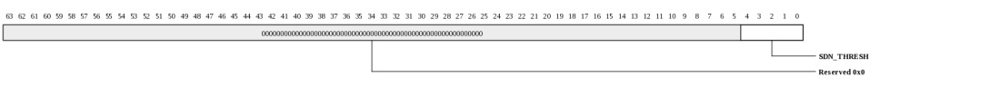
| Bits | Name | Type | Reset | Description
| 4:0 | SDN_THRESH | RW | 5 | Number of packet flits required in SDN synchronization FIFOs before packet is sent. Smaller values optimize latency but could introduce bandwidth-wasting bubbles on the network. | |
|---|
Clock Control (TRIO_CLOCK_CONTROL: 0x0400)
NOTE: This register only exists in the following devices: Gx9 Gx16 Gx36 Gx72.Provides control over tclk PLL. NOTE: tclk must be set to at least 500 MHz based on the default settings in TRIO_PCIE_INTFC_TX_FIFO_CTL.TXn_DATA_AE_LVL.
This register is protected at level 2
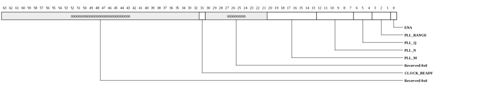
| Bits | Name | Type | Reset | Description
| 31 | CLOCK_READY | RO | 0 | Indicates that PLL has been enabled and clock is now running off of the PLL output. | 20:13 | PLL_M | RW | 0 | Feedback divider value. The resulting clock frequency is calculated as ((REF / (PLL_N+1)) * 2 * (PLL_M + 1)) / (2^Q). The VCO frequency is (REF / (PLL_N+1)) * 2 * (PLL_M + 1)) and must be in the range of 2133 MHz to 4266 MHz. | For example, to create a 1 GHz clock from a 125 MHz refclk, Q would be set to 2 so that the VCO would be 1 GHz*2^2 = 4000 MHz. 2*(PLL_M+1)/(PLL_N+1) = 32. PLL_N=0 and PLL_M=15 would keep the post divide frequency within the legal range since 125/(0+1) is 125. PLL_RANGE would be set to R104_166. 12:7 | PLL_N | RW | 0 | Reference divider value. Input refclk is divided by (PLL_N+1). The post-divided clock must be in the range of 14 MHz to 200 MHz. The low 5 bits of this field are used. The MSB is reserved. The minimum value of PLL_N that keeps the post-divided clock within the legal range will provide the best jitter performance. | 6:4 | PLL_Q | RW | 0 | Output divider. The VCO clock is divided by 2^PLL_Q to create the final output clock. This should be set such that 2133 MHz<(output_frequency * 2^PLL_Q)<4266 MHz. The maximum supported value of PLL_Q is 6 (divide by 64). | 3:1 | PLL_RANGE | RW | 0 | This value should be set based on the post divider frequency, REF/(PLL_N+1). |
0 | ENA | RW | 0 | When written with a 1, the PLL will be configured with the settings in PLL_RANGE/Q/N/M. When written with a zero, the PLL will be bypassed. | |
|---|
Error Status (TRIO_ERROR_STATUS: 0x0600)
Indicators for various fatal and non-fatal TRIO error conditionsThis register is protected at level 2

| Bits | Name | Type | Reset | Description
| 0 | MMIO_ILL_OPC | RO | 0 | Illegal opcode received on MMIO interface | |
|---|
MMIO Error Information (TRIO_MMIO_ERROR_INFO: 0x0608)
Provides diagnostics information when an MMIO error occurs. Captured whenever the MMIO_ERR interrupt condition which is typically due to a size error. This does not update on a CFG_PROT interrupt.This register is protected at level 2

| Bits | Name | Type | Reset | Description
| 56:52 | OPC | RO | 0 | NOTE: This field only exists in the following devices: Gx9 Gx16 Gx36 Gx72. | Opcode of request. MMIO supports only MMIO_READ (0x0e) and MMIO_WRITE (0x0f). All others are reserved and will only occur on a misconfigured TLB. 51:12 | PA | RO | 0 | NOTE: This field only exists in the following devices: Gx9 Gx16 Gx36 Gx72. | Full PA from request. 11:8 | SIZE | RO | 0 | NOTE: This field only exists in the following devices: Gx9 Gx16 Gx36 Gx72. | Request size. 0=1B, 1=2B, 2=4B, 3=8B, 4=16B, 5=32B, 6=48B, 7=64B. 7:0 | SRC | RO | 0 | NOTE: This field only exists in the following devices: Gx9 Gx16 Gx36 Gx72. | Source Tile in {x[3:0],y[3:0]} format. |
|---|
Panic Mode Control (TRIO_PANIC_MODE_CTL: 0x0610)
Controls for panic mode which is used to force transactions to complete in a timely manner when Tile-side software has become unresponsive. This mode is typically triggered when Tile side software is no longer providing valid IO TLB translations for MAP-MEM/SQ read and write requests. The PANIC_PA is also used for ingress transactions that do not match any of the MAP regions.This register is protected at level 2
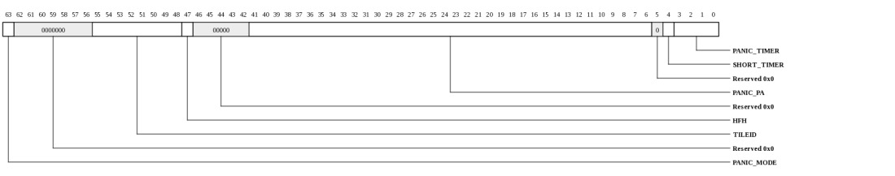
| Bits | Name | Type | Reset | Description
| 63 | PANIC_MODE | RW | 0 | Hardware sets this bit when a panic occurs. It may be cleared by software. From the PCIe interface, it may be cleared by accessing MMIO space via the rshim's SGP mechanism. | 55:48 | TILEID | RW | 0 | Homing information for the PANIC_PA. Home Tile when HFH=0, or {mask,offset} when HFH=1. | 47 | HFH | RW | 0 | Homing information for the PANIC_PA. If HFH is 0, TileID is the home Tile. If HFH is 1, TileID[7:4] is the HFH table mask and TileID[3:0] is the HFH table offset. | 41:6 | PANIC_PA | RW | 0 | When a panic occurs, reads will be directed to PANIC_PA and writes will be directed to PANIC_PA+64. The PANIC_PA is always cacheline aligned, hence this field represents the upper 36 bits of the PA and the low 6 bits of the PA are assumed to be zero. | 4 | SHORT_TIMER | RW | 0 | Used for software testing. When set to 1, the panic timer will be set to 1024 cycles. | 3:0 | PANIC_TIMER | RW | 8 | Indicates the timeout value for incoming requests. If an incoming PCIe request has not made progress within this time, TRIO will enter PANIC_MODE and requests will be directed to the PANIC_PA to allow forward progress. The timeout value is 2^(CPL_TIMER+12) cycles. Thus if trio is operating at 950MHz, a value of 0 corresponds to approximately 4.0us. And a value of 8 corresponds to approximately 1103.0us. Setting to all 1's disables the panic timer thus the max timer value at 950MHz is 70.6ms. | |
|---|
MAC Configuration (TRIO_MAC_CONFIG: 0x0700-0x071f)
Configuration parameters for each MAC.This register is protected at level 2
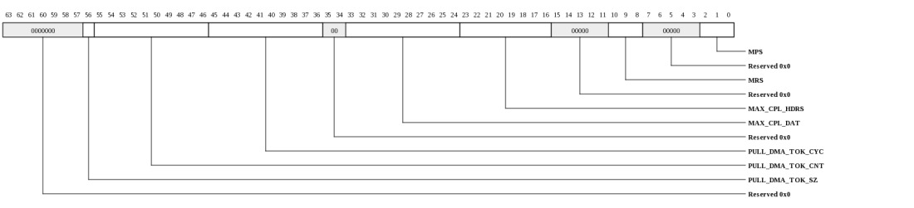
| Bits | Name | Type | Reset | Description
| 56 | PULL_DMA_TOK_SZ | RW | 1 | Determines the maximum token count. Setting this to one caps the maximum number of bandwidth tokens at 511. This reduces hysteresis and allows less burstiness in the system. When 0, the TOK_CNT has a max value of 1023. Setting to zero is more useful in systems that tend to favor bursty reads. Most systems will find better performance with this set to 0, though the impact is minor. | 55:46 | PULL_DMA_TOK_CNT | RW | 6 | Number of tokens to add for pull DMA reads each PULL_DMA_TOK_CYC. N+1 tokens will be added at each TOK_CYC count. Values of 0-0x3fe are valid. 0x3ff is RESERVED. | 45:36 | PULL_DMA_TOK_CYC | RW | 2fh | Number of cycles between adding each additional set PULL_DMA_TOK_CNT of tokens on reads. Each pull DMA read packet that is sent consumes bytes/16 tokens. The read bandwidth allocated for the associated MAC is 128*TCLK_MHZ*(TOK_CNT+1)/(TOK_CYC+1) Mbps. The TOK_CYC/TOK_CNT fields should be set based on the achievable read/read-completion bandwidth on the link. Setting the TOK_CNT/TOK_CYC ratio too large will result in reduced PUSH DMA write performance, and read/completion congestion in the system. | 33:24 | MAX_CPL_DAT | RW | 3fch | Maximum number of 16-byte completion data credits allocated for outgoing PIO/PULL DMA read requests. This must not exceed the capability of the associated MAC (e.g. the reset value). Must be at least large enough to hold 1 outstanding max-request size plus four extra. MAX_CPL_DAT must be at least (MRS/16)+4. | 23:16 | MAX_CPL_HDRS | RW | ffh | Maximum number of completion headers allocated for outgoing PIO/PULL DMA read requests. This must not exceed the capability of the associated MAC (e.g. the reset value). Must be at least large enough to hold 1 outstanding max-request size plus one extra. A request can be partitioned into 64-byte completions, so MAX_CPL_HDRS must be at least (MRS/64)+1. | 10:8 | MRS | RW | 6 | Maximum request size for the associated MAC. Must not exceed the capabilities or configuration of the MAC. 0=64, 1=128, ..., 6=4096. Encodings larger than 6 are reserved. | 2:0 | MPS | RW | 1 | Maximum packet size for the associated MAC. Must not exceed the capabilities or configuration of the MAC. 0=64, 1=128, ..., 4=1024. Encodings larger than 4 are reserved. | |
|---|
Map Rshim Region Setup (TRIO_MAP_RSH_SETUP: 0x0800)
Configuration of the rshim region.This register is protected at level 2
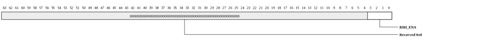
| Bits | Name | Type | Reset | Description
| 3:0 | RSH_ENA | RW | 15 | Enable the rshim region. When 0, accesses from the associated MAC will not be mapped to the rshim region. | |
|---|
Rshim Region Base Address (TRIO_MAP_RSH_BASE: 0x0808)
Base address of the associated memory region. The rshim region consumes 1024kB of address space.This register is protected at level 2

| Bits | Name | Type | Reset | Description
| 63:12 | ADDR | RW | 0 | Base page address. An IO address must be greater than or equal to this address and less than this address plus 0x100000 to be accepted into the region. | |
|---|
Rshim Region Address Format (TRIO_MAP_RSH_ADDR_FMT: 0x0808)
This register describes the address format for requests that target the rshim region.This register is protected at level 2
| Bits | Name | Type | Reset | Description
| 19:16 | CH | RO | 0 | Rshim channel specifier | 15:0 | ADDR | RO | 0 | Full byte address within rshim register space | |
|---|
Map Error Status (TRIO_MAP_ERR_STS: 0x0810)
Captured information from packet with mapping error.This register is protected at level 2
| Bits | Name | Type | Reset | Description
| 63:12 | IO_ADDR | RO | 0 | IO Address of packet that was not handled by any mapping region. | 8 | WRITE | RO | 0 | When 1, request was a write. When 0, request was a read | 1:0 | SRC_MAC | RO | 0 | MAC from which the request arrived. | |
|---|
Tile PIO Timeout Status (TRIO_TILE_PIO_TIMEOUT_STS: 0x09e8)
Contains information for the most recent Tile PIO timeout.This register is protected at level 2
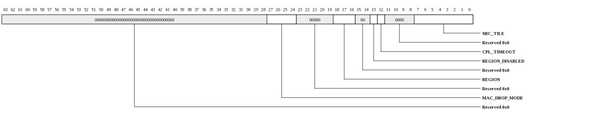
| Bits | Name | Type | Reset | Description
| 27:24 | MAC_DROP_MODE | W1TC | 0 | For each set bit, the MAC is in drop mode due to a timeout and all subsequent PIOs for that MAC will also be dropped. Writing with a 1 will clear drop mode. | 18:16 | REGION | RO | 0 | Region that timed out. | 13 | REGION_DISABLED | RO | 0 | When 1, a PIO request was discarded due to the region being disabled. | 12 | CPL_TIMEOUT | RO | 0 | When 1, the timeout was due to waiting for a read (or config/IO) completion. When 0, the timeout occurred due to waiting for the MAC to consume the original request and a MAC_DROP_MODE bit will be set. | 7:0 | SRC_TILE | RO | 0 | Contains the TileID for the request that timed out. | |
|---|
Tile PIO Completion Error Status (TRIO_TILE_PIO_CPL_ERR_STS: 0x09f0)
Contains information for the most recent Tile PIO completion error (response from MAC flagged an error).This register is protected at level 2
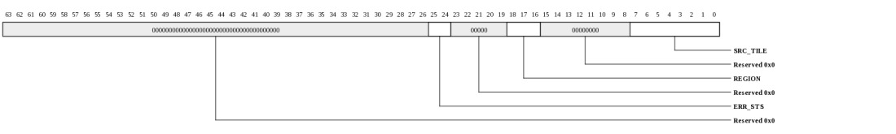
| Bits | Name | Type | Reset | Description
| 25:24 | ERR_STS | RO | 0 | Indicates error type that was received. |
18:16 | REGION | RO | 0 | Region that encountered an error. | 7:0 | SRC_TILE | RO | 0 | Contains the TileID for the request that encountered an error. | |
|---|
Tile PIO Controls (TRIO_TILE_PIO_CTL: 0x09f8)
Controls for Tile PIO TransactionsThis register is protected at level 2
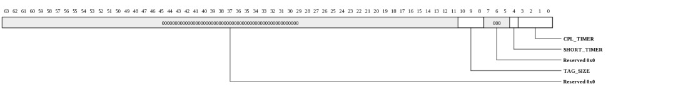
| Bits | Name | Type | Reset | Description
| 10:8 | TAG_SIZE | RW | 2 | This setting controls the number of tags available for PIO reads and configuration requests. This must not exceed the capability of any of the attached MACs. Remaining tag space may be used by pull DMA requests. If this value is decreased, at least one PIO read or configuration request must be sent before the change will take effect. If this value is increased, the associated TAGs must be removed from pull DMA by accessing the PULL_DMA_FREE_TAG register. The maximum supported value is 5. |
4 | SHORT_TIMER | RW | 0 | Used for software testing. When set to 1, the PIO completion timer will be set to 1024 cycles. | 3:0 | CPL_TIMER | RW | 6 | Indicates the timeout value for PIO requests (both loads and stores). After this time expires, the request is assumed to be lost and an MMIO error will be signaled back to the requesting Tile and a PIO completion timeout interrupt will be signaled. The timeout value is 2^(CPL_TIMER+18) cycles. Thus if trio is operating at 950MHz, a value of 0 corresponds to approximately 0.3ms. And a value of 6 corresponds to approximately 17.7ms. Setting to all 1's disables the completion timer thus the max timer value at 950MHz is 4521.0ms. The timer is accurate within +0/-6.6%. | |
|---|
Tile PIO Region Configuration (TRIO_TILE_PIO_REGION_SETUP: 0x1000-0x103f)
Configuration of the associated PIO region. There is one register for each region.This register is protected at level 2
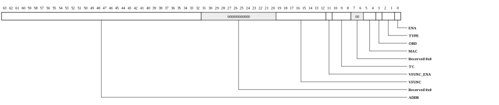
| Bits | Name | Type | Reset | Description
| 63:32 | ADDR | RW | 0 | When an MMIO load or store targets the associated PIO region, the ADDR gets appended as MSBs to the MMIO offset field to form the transaction's IO address. For CFG regions, this field must be set to zero. | 19:12 | VFUNC | RW | 0 | Virtual function associated with this region. | 11 | VFUNC_ENA | RW | 0 | When 1, use the virtual function selected by VFUNC for requests. | 10:8 | TC | RW | 0 | Specifies the TC to be used with this PIO region. | 5:4 | MAC | RW | 0 | This field specifies the MAC associated with the PIO region. For config transactions, this must match the MAC specifier in the MMIO transaction address (e.g. TILE_PIO_REGION_SETUP_CFG_ADDR.MAC). | 3 | ORD | RW | 0 | Strict-order mode. When 1, writes and reads to the region will wait until previous reads have completed. This prevents writes and reads from being reordered in the IO system. | 2:1 | TYPE | RW | 0 | Region type |
0 | ENA | RW | 0 | Enable the region. When 0, accesses to the associated PIO region will cause an MMIO error. | |
|---|
Tile PIO Region Configuration - CFG Address Format (TRIO_TILE_PIO_REGION_SETUP_CFG_ADDR: 0x1000)
This register describes the address format for PIO accesses when the associated region is setup with TYPE=CFG.This register is protected at level 2
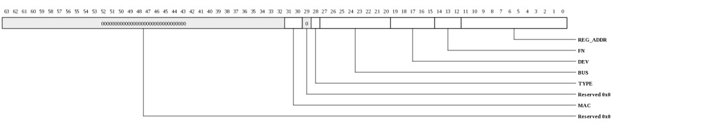
| Bits | Name | Type | Reset | Description
| 31:30 | MAC | RO | 0 | MAC select. This must match the configuration in TILE_PIO_REGION_SETUP.MAC. | 28 | TYPE | RO | 0 | Config Type: 0 for access to directly-attached device. 1 otherwise. | 27:20 | BUS | RO | 0 | BUS Number | 19:15 | DEV | RO | 0 | Device Number | 14:12 | FN | RO | 0 | Function Number | 11:0 | REG_ADDR | RO | 0 | Register Address (full byte address). | |
|---|
Interrupt vector-0, write-one-to-clear (TRIO_INT_VEC0_W1TC: 0x1800)
Interrupt status vector with write-one-to-clear functionality. Provides access to the same status bits that are visible in INT_VEC0_RTC. Writing a 1 clears the status bit. Bit definitions are provided in the INT_VEC0 register description.This register is protected at level 2
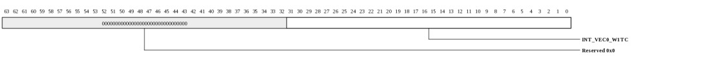
| Bits | Name | Type | Reset | Description
| 31:0 | INT_VEC0_W1TC | RW | 0 | Interrupt status vector with write-one-to-clear functionality. Provides access to the same status bits that are visible in INT_VEC0_RTC. Writing a 1 clears the status bit. Bit definitions are provided in the INT_VEC0 register description. | |
|---|
Interrupt vector-0, write-one-to-clear (TRIO_INT_VEC0: 0x1800)
This describes the interrupt status vector that is accessible through INT_VEC0_W1TC and INT_VEC0_RTC.This register is protected at level 2
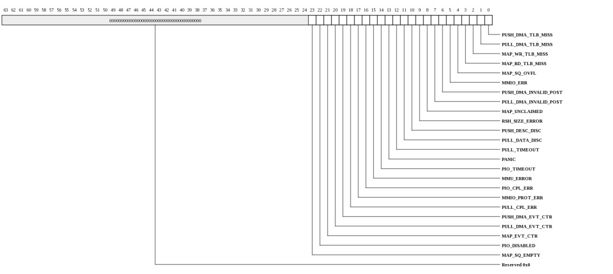
| Bits | Name | Type | Reset | Description
| 23 | MAP_SQ_EMPTY | RW | 0 | An incoming transaction targeted an SQ, but there was no descriptor available. Info captured in MAP_SQ_CTL. | 22 | PIO_DISABLED | RW | 0 | Access to disabled PIO region. Error info captured in TILE_PIO_TIMEOUT_STS | 21 | MAP_EVT_CTR | RW | 0 | The MAP_EVT_CTR wrapped | 20 | PULL_DMA_EVT_CTR | RW | 0 | The PULL_DMA_EVT_CTR wrapped | 19 | PUSH_DMA_EVT_CTR | RW | 0 | The PUSH_DMA_EVT_CTR wrapped | 18 | PULL_CPL_ERR | RW | 0 | A PULL DMA transaction received an error completion from the MAC. The associated region is stored in PULL_DMA_CPL_ERR_STS/INFO. | 17 | MMIO_PROT_ERR | RW | 0 | An MMIO request violated the config register protection level. The MMIO_ERR will also fire when this interrupt is triggered. | 16 | PIO_CPL_ERR | RW | 0 | A PIO transaction received an error completion from the MAC. The associated region is stored in TILE_PIO_CPL_ERR_STS. | 15 | MMU_ERROR | RW | 0 | A MAP_MEM request used an invalid MMU entry. | 14 | PIO_TIMEOUT | RW | 0 | A PIO transaction has timed out. The associated region is stored in TILE_PIO_TIMEOUT_STS. This interrupt occurs when a request times out trying to go to the MAC (due to credit starvation for example). It also occurs when a read completion times out. Thus a PIO read that is not making progress can generate two interrupts: once for the stalled request and once for the lack of completion. | 13 | PANIC | RW | 0 | The panic timer has expired causing MAP-MEM/SQ reads and writes to be directed to the PANIC_PA. | 12 | PULL_TIMEOUT | RW | 0 | A pull DMA request timed out. Timed-out rings are indicated in PULL_DMA_TIMEOUT_STS. | 11 | PULL_DATA_DISC | RW | 0 | Pull DMA data was discarded due to TLB miss. The faulting ring is captured in PULL_DMA_STS. | 10 | PUSH_DESC_DISC | RW | 0 | A push DMA descriptor was discarded. The faulting ring is captured in PUSH_DMA_STS. | 9 | RSH_SIZE_ERROR | RW | 0 | A request targeting the rshim violated the maximum read request size. | 8 | MAP_UNCLAIMED | RW | 0 | An ingress packet was not claimed by any map region. The info for the request is captured in MAP_ERR_STS. | 7 | PULL_DMA_INVALID_POST | RW | 0 | Software posted a descriptor, but the fetcher did not find a valid descriptor. The faulting ring is captured in PULL_DMA_STS. | 6 | PUSH_DMA_INVALID_POST | RW | 0 | Software posted a descriptor, but the fetcher did not find a valid descriptor. The faulting ring is captured in PUSH_DMA_STS. | 5 | MMIO_ERR | RW | 0 | An MMIO request encountered an error. Error info captured in MMIO_ERROR_INFO. | 4 | MAP_SQ_OVFL | RW | 0 | One of the MAP SQ FIFOs overflowed on an MMIO write (descriptor discarded). Info captured in MAP_SQ_CTL | 3 | MAP_RD_TLB_MISS | RW | 0 | TLB miss occurred on an ingress map read transaction. Exception information contained in TLB_MAP_RD_EXC_ADDR | 2 | MAP_WR_TLB_MISS | RW | 0 | TLB miss occurred on an ingress map write transaction. Exception information contained in TLB_MAP_WR_EXC_ADDR | 1 | PULL_DMA_TLB_MISS | RW | 0 | TLB miss occurred on a push DMA transaction. Exception information contained in TLB_PULL_DMA_EXC_ADDR | 0 | PUSH_DMA_TLB_MISS | RW | 0 | TLB miss occurred on a push DMA transaction. Exception information contained in TLB_PUSH_DMA_EXC_ADDR | |
|---|
Interrupt vector-1, write-one-to-clear (TRIO_INT_VEC1_W1TC: 0x1808)
Interrupt status vector with write-one-to-clear functionality. Provides access to the same status bits that are visible in INT_VEC1_RTC. This vector contains the interrupts associated with the 64 push DMA rings. Writing a 1 clears the status bit.This register is protected at level 2

| Bits | Name | Type | Reset | Description
| 63:0 | INT_VEC1_W1TC | RW | 0 | Interrupt status vector with write-one-to-clear functionality. Provides access to the same status bits that are visible in INT_VEC1_RTC. This vector contains the interrupts associated with the 64 push DMA rings. Writing a 1 clears the status bit. | |
|---|
Interrupt vector-2, write-one-to-clear (TRIO_INT_VEC2_W1TC: 0x1810)
Interrupt status vector with write-one-to-clear functionality. Provides access to the same status bits that are visible in INT_VEC2_RTC. This vector contains the interrupts associated with the 64 pull DMA rings. Writing a 1 clears the status bit.This register is protected at level 2
| Bits | Name | Type | Reset | Description
| 63:0 | INT_VEC2_W1TC | RW | 0 | Interrupt status vector with write-one-to-clear functionality. Provides access to the same status bits that are visible in INT_VEC2_RTC. This vector contains the interrupts associated with the 64 pull DMA rings. Writing a 1 clears the status bit. | |
|---|
Interrupt vector 3, write-one-to-clear (TRIO_INT_VEC3_W1TC: 0x1818)
Interrupt status vector with write-one-to-clear functionality. Provides access to the same status bits that are visible in INT_VEC3_RTC. This vector contains the interrupts associated with the 8 map SQ regions. Writing a 1 clears the status bit. The low 8 bits are the associated region's doorbell interrupt. The next 8 bits are the associated region's descriptor-dequeue interrupt.This register is protected at level 2
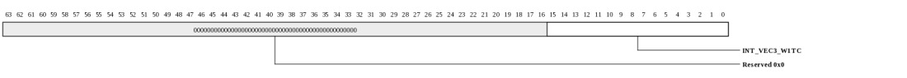
| Bits | Name | Type | Reset | Description
| 15:0 | INT_VEC3_W1TC | RW | 0 | Interrupt status vector with write-one-to-clear functionality. Provides access to the same status bits that are visible in INT_VEC3_RTC. This vector contains the interrupts associated with the 8 map SQ regions. Writing a 1 clears the status bit. The low 8 bits are the associated region's doorbell interrupt. The next 8 bits are the associated region's descriptor-dequeue interrupt. | |
|---|
Interrupt vector 4, write-one-to-clear (TRIO_INT_VEC4_W1TC: 0x1820)
Interrupt status vector with write-one-to-clear functionality. Provides access to the same status bits that are visible in INT_VEC4_RTC. This vector contains the interrupts associated with the MAP-MEM interrupts. Writing a 1 clears the status bit.This register is protected at level 2
| Bits | Name | Type | Reset | Description
| 31:0 | INT_VEC4_W1TC | RW | 0 | Interrupt status vector with write-one-to-clear functionality. Provides access to the same status bits that are visible in INT_VEC4_RTC. This vector contains the interrupts associated with the MAP-MEM interrupts. Writing a 1 clears the status bit. | |
|---|
Interrupt vector-0, read-to-clear (TRIO_INT_VEC0_RTC: 0x1880)
Interrupt status vector with read-to-clear functionality. Provides access to the same status bits that are visible in INT_VEC0_W1TC. Reading this register clears all of the associated interrupts. Bit definitions are provided in the INT_VEC0 register description.This register is protected at level 2
| Bits | Name | Type | Reset | Description
| 31:0 | INT_VEC0_RTC | RO | 0 | Interrupt status vector with read-to-clear functionality. Provides access to the same status bits that are visible in INT_VEC0_W1TC. Reading this register clears all of the associated interrupts. Bit definitions are provided in the INT_VEC0 register description. | |
|---|
Interrupt vector-1, read-to-clear (TRIO_INT_VEC1_RTC: 0x1888)
Interrupt status vector with read-to-clear functionality. Provides access to the same status bits that are visible in INT_VEC1_W1TC. This vector contains the interrupts associated with the 64 push DMA rings. Reading this register clears all of the associated interrupts.This register is protected at level 2
| Bits | Name | Type | Reset | Description
| 63:0 | INT_VEC1_RTC | RO | 0 | Interrupt status vector with read-to-clear functionality. Provides access to the same status bits that are visible in INT_VEC1_W1TC. This vector contains the interrupts associated with the 64 push DMA rings. Reading this register clears all of the associated interrupts. | |
|---|
Interrupt vector-2, read-to-clear (TRIO_INT_VEC2_RTC: 0x1890)
Interrupt status vector with read-to-clear functionality. Provides access to the same status bits that are visible in INT_VEC2_W1TC. This vector contains the interrupts associated with the 64 pull DMA rings. Reading this register clears all of the associated interrupts.This register is protected at level 2
| Bits | Name | Type | Reset | Description
| 63:0 | INT_VEC2_RTC | RO | 0 | Interrupt status vector with read-to-clear functionality. Provides access to the same status bits that are visible in INT_VEC2_W1TC. This vector contains the interrupts associated with the 64 pull DMA rings. Reading this register clears all of the associated interrupts. | |
|---|
Interrupt vector 3, read-to-clear (TRIO_INT_VEC3_RTC: 0x1898)
Interrupt status vector with read-to-clear functionality. Provides access to the same status bits that are visible in INT_VEC3_W1TC. This vector contains the interrupts associated with the 8 map SQ regions. Reading this register clears all of the associated interrupts. The low 8 bits are the associated region's doorbell interrupt. The next 8 bits are the associated region's descriptor-dequeue interrupt.This register is protected at level 2
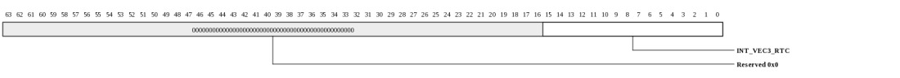
| Bits | Name | Type | Reset | Description
| 15:0 | INT_VEC3_RTC | RO | 0 | Interrupt status vector with read-to-clear functionality. Provides access to the same status bits that are visible in INT_VEC3_W1TC. This vector contains the interrupts associated with the 8 map SQ regions. Reading this register clears all of the associated interrupts. The low 8 bits are the associated region's doorbell interrupt. The next 8 bits are the associated region's descriptor-dequeue interrupt. | |
|---|
Interrupt vector 4, read-to-clear (TRIO_INT_VEC4_RTC: 0x18a0)
Interrupt status vector with read-to-clear functionality. Provides access to the same status bits that are visible in INT_VEC4_W1TC. This vector contains the interrupts associated with the MAP MEM interrupts. Writing a 1 clears the status bit.This register is protected at level 2
| Bits | Name | Type | Reset | Description
| 31:0 | INT_VEC4_RTC | RO | 0 | Interrupt status vector with read-to-clear functionality. Provides access to the same status bits that are visible in INT_VEC4_W1TC. This vector contains the interrupts associated with the MAP MEM interrupts. Writing a 1 clears the status bit. | |
|---|
Bindings for interrupt vectors (TRIO_INT_BIND: 0x1900)
This register provides read/write access to all of the interrupt bindings for TRIO. The VEC_SEL field is used to select the vector being configured and the BIND_SEL selects the interrupt within the vector. To read a binding, first write the VEC_SEL and BIND_SEL fields along with a 1 in the NW field. Then read back the register.This register is protected at level 2
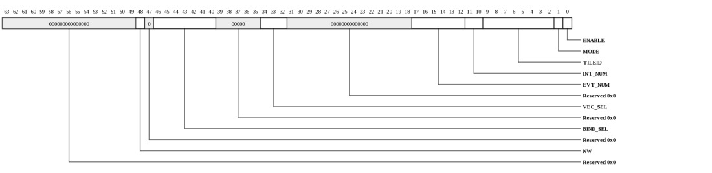
| Bits | Name | Type | Reset | Description
| 48 | NW | WO | 0 | When written with a 1, the interrupt binding data will not be modified. Set this when writing the VEC_SEL and BIND_SEL fields in preparation for a read. | 46:40 | BIND_SEL | RW | HW | Selects binding within the vector selected by VEC_SEL. | 34:32 | VEC_SEL | RW | HW | Selects vector whose bindings are to be accessed. |
17:12 | EVT_NUM | RW | HW | Event number to be delivered to Tile | 11:10 | INT_NUM | RW | HW | Interrupt number to be delivered to Tile | 9:2 | TILEID | RW | HW | Tile targeted for this interrupt in {x[3:0],y[3:0]} format. | 1 | MODE | RW | 0 | When 1, interrupt will be dispatched each time it occurs. When 0, the interrupt is only sent if the status bit is clear. This field is not used for MAC interrupts (ISR needs to clear MAC interrupt status on each occurrence). | 0 | ENABLE | RW | 0 | Enable the interrupt. When 0, the interrupt won't be dispatched, however the STATUS bit will continue to be updated. | |
|---|
Push DMA Descriptor Manager Init Control (TRIO_PUSH_DMA_DM_INIT_CTL: 0x2400)
Initialization control for the push_dma descriptor manager data structuresThis register is protected at level 2

| Bits | Name | Type | Reset | Description
| 17:16 | STRUCT_SEL | RW | 0 | Structure to be accessed. |
5:0 | IDX | RW | 0 | push_dma Ring to be accessed. Increments automatically on write or read to PUSH_DMA_DM_INIT_DAT | |
|---|
Push DMA Descriptor Manager Init Data (TRIO_PUSH_DMA_DM_INIT_DAT: 0x2408)
Read/Write data for push_dma descriptor manager setupThis register is protected at level 2

| Bits | Name | Type | Reset | Description
| 63:0 | DAT | RW | 0 | Write/Read data for the structure configured in PUSH_DMA_DM_INIT_CTL. PUSH_DMA_DM_INIT_CTL.IDX selects the push DMA ring being accessed and increments automatically on each write or read. The format for this data depends on the structure being accessed. | |
|---|
Push DMA Descriptor Manager Init Data when PUSH_DMA_DM_INIT_CTL.STRUCT_SEL=SETUP (TRIO_PUSH_DMA_DM_INIT_DAT_SETUP: 0x2408)
NOTE: This register only exists in the following devices: Gx9 Gx16 Gx36 Gx72.Read/Write data for push_dma descriptor manager setup
This register is protected at level 2
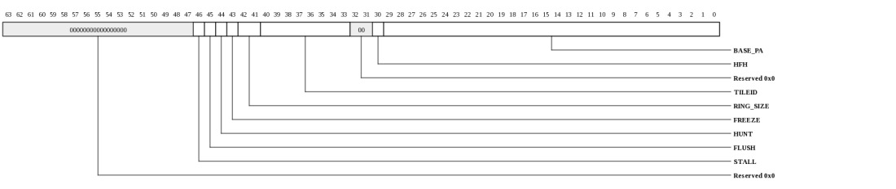
| Bits | Name | Type | Reset | Description
| 46 | STALL | RW | 0 | Ring stall. When asserted, no descriptors in the descriptor-fetch buffer will be processed. Hardware will set this bit automatically if a descriptor error is encountered on the associated ring. | 45 | FLUSH | RW | 0 | Flush mode. When set, the descriptor buffer will be cleared. Typically used along with PUSH_DMA_CTL.FENCE to drain a ring after an application crashes or the ring needs to be reassigned. | 44 | HUNT | RW | 0 | Hunt Mode. When 1, the descriptor fetcher will periodically check for valid descriptors on the ring even if the descriptor has not been posted. This allows software to write descriptors without posting or to post without an MF between the descriptor write and the post. | 43 | FREEZE | RW | 0 | Ring Freeze. The ring will not fetch new descriptors when this is asserted. Descriptors that have already been fetched will continue to be processed. Hardware will set this bit automatically if a descriptor error is encountered on the associated ring. | 42:41 | RING_SIZE | RW | 0 | Encoded Ring Size. |
40:33 | TILEID | RW | 0 | Home Tile when HFH=0, or {mask,offset} when HFH=1. | 30 | HFH | RW | 0 | If HFH is 0, TileID is the home Tile. If HFH is 1, TileID[7:4] is the HFH table mask and TileID[3:0] is the HFH table offset. | 29:0 | BASE_PA | RW | 0 | PA[39:10] of base of push_dma descriptor ring. Rings must be naturally aligned in PA space based on the ring size. | |
|---|
Push DMA Descriptor Manager Init Data when PUSH_DMA_DM_INIT_CTL.STRUCT_SEL=HEAD (TRIO_PUSH_DMA_DM_INIT_DAT_HEAD: 0x2408)
Read/Write data for push_dma descriptor manager setup. These fields must be written to zero when restarting a ring.This register is protected at level 2

| Bits | Name | Type | Reset | Description
| 16 | GNUM | RW | 0 | Current gnum (valid descriptor will have inverted gnum) | 15:0 | HEAD | RW | 0 | | |
|---|
Push DMA Descriptor Manager Init Data when PUSH_DMA_DM_INIT_CTL.STRUCT_SEL=DESC_STATE0 (TRIO_PUSH_DMA_DM_INIT_DAT_DESC_STATE0: 0x2408)
Read/Write data for push_dma descriptor manager setup.This register is protected at level 2

| Bits | Name | Type | Reset | Description
| 63:0 | STATE | RW | 0 | Current descriptor state. There are 64 2-bit entries. Entries 0-31 are in DESC_STATE0 and entries 32-63 are in DESC_STATE1. When a ring is being restarted, this register must be written to 1. Each 2-bit entry represents the hardware state of the descriptor being monitored at the associated location. Bits[1:0] represent the state of the descriptor at the HEAD. Bits[3:2] represent the state at HEAD+1 etc. The states are encoded as: | ...0 = UNKNOWN - descriptor state is not known by hardware and will need to be fetched from Tile memory ...1 = KNOWN_INVALID - descriptor state is known to be invalid and does not need to be fetched from Tile memory (this is the reset state for the first 64 descriptors) ...2 = KNOWN_VALID - descriptor is known to be valid based on software descriptor posts. A Tile memory fetch will eventually be launched to retrieve the descriptor. ...3 = DONE - valid descriptor has been fetched and is in the process of being enqueued for processing |
|---|
Push DMA Descriptor Manager Init Data when PUSH_DMA_DM_INIT_CTL.STRUCT_SEL=DESC_STATE1 (TRIO_PUSH_DMA_DM_INIT_DAT_DESC_STATE1: 0x2408)
Read/Write data for push DMA descriptor manager setup.This register is protected at level 2

| Bits | Name | Type | Reset | Description
| 63:0 | STATE | RW | 0 | See PUSH_DMA_DM_INIT_DAT_DESC_STATE0. When a ring is being restarted, this register must be written to 0. | |
|---|
Push DMA Request Generator Init Control (TRIO_PUSH_DMA_RG_INIT_CTL: 0x2410)
Initialization control for the push_dma request generator data structuresThis register is protected at level 2
| Bits | Name | Type | Reset | Description
| 17:16 | STRUCT_SEL | RW | 0 | Structure to be accessed. |
6:0 | IDX | RW | 0 | Index into structure to be accessed. Increments automatically on write or read to PUSH_DMA_RG_INIT_DAT | |
|---|
Push DMA Request Generator Init Data (TRIO_PUSH_DMA_RG_INIT_DAT: 0x2418)
Read/Write data for push_dma descriptor manager setupThis register is protected at level 2

| Bits | Name | Type | Reset | Description
| 63:0 | DAT | RW | 0 | Write/Read data for the structure configured in PUSH_DMA_RG_INIT_CTL. PUSH_DMA_RG_INIT_CTL.IDX indexes into the structure being accessed and increments automatically on each write or read. The format for this data depends on the structure being accessed. | |
|---|
Push DMA Request Generator Init Data for ASIDs (TRIO_PUSH_DMA_RG_INIT_DAT_ASID: 0x2418)
NOTE: This register only exists in the following devices: Gx9 Gx16 Gx36 Gx72.Read/Write data for push_dma descriptor manager setup when PUSH_DMA_RG_INIT_CTL.STRUCT_SEL=ASID
This register is protected at level 2
| Bits | Name | Type | Reset | Description
| 4 | FLUSH_MODE | RW | 0 | When 1, a TLB fault will result in the descriptor being dropped when a TLB fault occurs. When 0, the descriptor will retry until the TLB miss is satisfied. | 3:0 | ASID | RW | 0 | ASID: specifies the ASID associated with this ring. PUSH_DMA_RG_INIT_CTL.IDX selects the ring being configured. | |
|---|
Push DMA Request Generator Init Data for thresholds (TRIO_PUSH_DMA_RG_INIT_DAT_THRESH: 0x2418)
Read/Write data for push_dma descriptor manager setup when PUSH_DMA_RG_INIT_CTL.STRUCT_SEL=THRESHThis register is protected at level 2
| Bits | Name | Type | Reset | Description
| 32 | DB | RW | 1 | Specifies that this ring (or MAC for MAP-read-completions) may consume dynamic (undifferentiated) ebuf blocks. When 0, the flow may only consume from the reserved block pool. | 9:0 | MAX_BLKS | RW | 14 | Specifies how many 256-byte blocks this ring (or MAC for MAP-read-completions) is allowed to consume. If the number of active rings+MACs times the MAX_BLKS+2 in each ring exceeds PUSH_DMA_STS.NUM_EBUF_BLOCKS, the rings could block each other if a ring is stalled on egress. The "+2" accounts for extra blocks that can skid into the buffer as it fills. PUSH_DMA_RG_INIT_CTL.IDX selects the ring being configured. Each MAC must have MAX_BLKS set to at least ((MPS/256)+1) to guarantee that ingress reads make forward progress. Thus a minimum setting of 5 will work for all supported MPS values. | |
|---|
Push DMA Request Generator Init Data for MAC mapping and configuration. (TRIO_PUSH_DMA_RG_INIT_DAT_MAP: 0x2418)
Read/Write data for push_dma descriptor manager setup when PUSH_DMA_RG_INIT_CTL.STRUCT_SEL=MAPThis register is protected at level 2
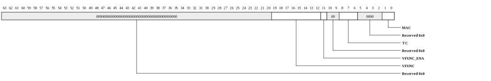
| Bits | Name | Type | Reset | Description
| 19:12 | VFUNC | RW | 0 | Virtual function associated with this ring. This field is used for type0 descriptors. | 11 | VFUNC_ENA | RW | 0 | When 1, use the virtual function selected by VFUNC for requests. This field is used for type0 descriptors. | 8:6 | TC | RW | 0 | Specifies the traffic class to be used with this ring. | 1:0 | MAC | RW | HW | Specifies the MAC associated with this ring. PUSH_DMA_RG_INIT_CTL.IDX selects the ring being configured. HW resets this field to RING mod 2. | |
|---|
Push DMA Control (TRIO_PUSH_DMA_CTL: 0x2420)
Configuration for push_dma servicesThis register is protected at level 2
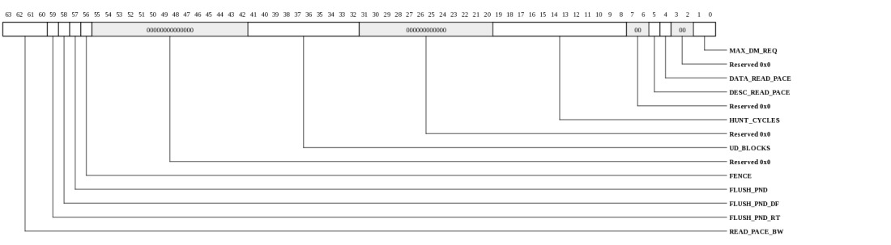
| Bits | Name | Type | Reset | Description
| 63:60 | READ_PACE_BW | RW | 3 | Controls the read pace bandwidth. Larger numbers result in lower bandwidth provisioned for Tile memory reads. Utilization is approximately 5/(5+N) so Setting to 3 corresponds to approximately 63% utilization. Setting to 4 corresponds to approximately 55% utilization. This can typically be left at 3 unless the system simultaneously has high bandwidth ingress map reads in which case 9 is typically a more appropriate setting. | 59 | FLUSH_PND_RT | RO | 0 | Flush is pending due to a request needing to complete and data in buffer needing to be flushed. | 58 | FLUSH_PND_DF | RO | 0 | Flush is pending due to a descriptor fetch. | 57 | FLUSH_PND | RO | 0 | Set by hardware when a push DMA ring in FLUSH mode still has descriptor fetches or data buffer blocks remaining. This bit must be clear prior to restarting the ring. | 56 | FENCE | RW | 0 | When written with a 1, a coherence fence is initiated. Hardware will clear the bit once all older push DMA data reads and MAP-SQ/MEM data reads have completed. | 41:32 | UD_BLOCKS | RW | 7fh | Number of ebuf blocks in the undifferentiated pool. As long as the sum of the MAX_BLKS thresholds is less than NUM_PUSH_EBUF_BLOCKS-UD_BLOCKS, the push_dma engine guarantees that head of line blocking will not occur. Note that these blocks are shared with ingress reads. | 19:8 | HUNT_CYCLES | RW | 3e8h | Controls how often "hunt" prefetches are sent. Hunt prefetches are periodically sent for rings that have hunt enabled in order to find valid descriptors. Setting this to a lower value will improve the response time in systems where descriptors posts are not being sent to push_dma. But smaller numbers will also consume additional request bandwidth, especially when multiple rings are operating in hunt mode. | 5 | DESC_READ_PACE | RW | 1 | When asserted, the push DMA descriptor engine will pace its read requests to avoid oversubscribing the response network bandwidth. | 4 | DATA_READ_PACE | RW | 1 | When asserted, the push DMA engine will pace its read requests to avoid oversubscribing the response network bandwidth. | 1:0 | MAX_DM_REQ | RW | 3 | Maximum number of push DMA descriptor ring read requests the descriptor manager hardware will allow outstanding to a single ring. | |
|---|
Push DMA Status (TRIO_PUSH_DMA_STS: 0x2428)
NOTE: This register only exists in the following devices: Gx9 Gx16 Gx36 Gx72.push_dma status
This register is protected at level 2
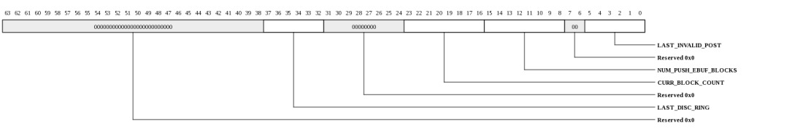
| Bits | Name | Type | Reset | Description
| 37:32 | LAST_DISC_RING | RO | 0 | Contains the ring number corresponding to a the last descriptor that was discarded due to TLB fault or size error. | 23:16 | CURR_BLOCK_COUNT | RO | 0 | Indicates the number of blocks currently store in the push DMA buffer. | 15:8 | NUM_PUSH_EBUF_BLOCKS | RO | 3ffh | Indicates the total number of 256-byte blocks provided in the ebuf buffer. Note that these blocks are shared between PUSH_DMA and ingress reads. | 5:0 | LAST_INVALID_POST | RO | 0 | Contains the ring number corresponding to a PUSH_DMA_POST_ERR interrupt. Updates each time an invalid-post event is detected. | |
|---|
Pull DMA Descriptor Manager Init Control (TRIO_PULL_DMA_DM_INIT_CTL: 0x2430)
Initialization control for the pull_dma descriptor manager data structuresThis register is protected at level 2

| Bits | Name | Type | Reset | Description
| 17:16 | STRUCT_SEL | RW | 0 | Structure to be accessed. |
5:0 | IDX | RW | 0 | pull_dma Ring to be accessed. Increments automatically on write or read to PULL_DMA_DM_INIT_DAT | |
|---|
Pull DMA Descriptor Manager Init Data (TRIO_PULL_DMA_DM_INIT_DAT: 0x2438)
Read/Write data for pull_dma descriptor manager setupThis register is protected at level 2

| Bits | Name | Type | Reset | Description
| 63:0 | DAT | RW | 0 | Write/Read data for the structure configured in PULL_DMA_DM_INIT_CTL. PULL_DMA_DM_INIT_CTL.IDX selects the pull DMA ring being accessed and increments automatically on each write or read. The format for this data depends on the structure being accessed. | |
|---|
Pull DMA Descriptor Manager Init Data when PULL_DMA_DM_INIT_CTL.STRUCT_SEL=SETUP (TRIO_PULL_DMA_DM_INIT_DAT_SETUP: 0x2438)
NOTE: This register only exists in the following devices: Gx9 Gx16 Gx36 Gx72.Read/Write data for pull_dma descriptor manager setup
This register is protected at level 2

| Bits | Name | Type | Reset | Description
| 46 | STALL | RW | 0 | Ring stall. When asserted, no descriptors in the descriptor-fetch buffer will be processed. Hardware will set this bit automatically if a descriptor error is encountered on the associated ring. | 45 | FLUSH | RW | 0 | Flush mode. When set, the descriptor buffer will be cleared. Typically used to drain a ring after an application crashes or the ring needs to be reassigned. | 44 | HUNT | RW | 0 | Hunt Mode. When 1, the descriptor fetcher will periodically check for valid descriptors on the ring even if the descriptor has not been posted. This allows software to write descriptors without posting or to post without an MF between the descriptor write and the post. | 43 | FREEZE | RW | 0 | Ring Freeze (ring will not fetch new descriptors when this is asserted - resets to 1) | 42:41 | RING_SIZE | RW | 0 | Encoded Ring Size. |
40:33 | TILEID | RW | 0 | Home Tile when HFH=0, or {mask,offset} when HFH=1. | 30 | HFH | RW | 0 | If HFH is 0, TileID is the home Tile. If HFH is 1, TileID[7:4] is the HFH table mask and TileID[3:0] is the HFH table offset. | 29:0 | BASE_PA | RW | 0 | PA[39:10] of base of pull_dma descriptor ring. Rings must be naturally aligned in PA space based on the ring size. | |
|---|
Pull DMA Descriptor Manager Init Data when PULL_DMA_DM_INIT_CTL.STRUCT_SEL=HEAD (TRIO_PULL_DMA_DM_INIT_DAT_HEAD: 0x2438)
Read/Write data for pull_dma descriptor manager setup. These fields must be written to zero when restarting a ring.This register is protected at level 2

| Bits | Name | Type | Reset | Description
| 16 | GNUM | RW | 0 | Current gnum (valid descriptor will have inverted gnum) | 15:0 | HEAD | RW | 0 | | |
|---|
Pull DMA Descriptor Manager Init Data when PULL_DMA_DM_INIT_CTL.STRUCT_SEL=DESC_STATE0 (TRIO_PULL_DMA_DM_INIT_DAT_DESC_STATE0: 0x2438)
Read/Write data for pull_dma descriptor manager setup.This register is protected at level 2

| Bits | Name | Type | Reset | Description
| 63:0 | STATE | RW | 0 | Current descriptor state (for diagnostics). There are 64 2-bit entries. Entries 0-31 are in DESC_STATE0 and entries 32-63 are in DESC_STATE1. When a ring is being restarted, this register must be written to 1. Each 2-bit entry represents the hardware state of the descriptor being monitored at the associated location. Bits[1:0] represent the state of the descriptor at the HEAD. Bits[3:2] represent the state at HEAD+1 etc. The states are encoded as: | ...0 = UNKNOWN - descriptor state is not known by hardware and will need to be fetched from Tile memory ...1 = KNOWN_INVALID - descriptor state is known to be invalid and does not need to be fetched from Tile memory (this is the reset state for the first 64 descriptors) ...2 = KNOWN_VALID - descriptor is known to be valid based on software descriptor posts. A Tile memory fetch will eventually be launched to retrieve the descriptor. ...3 = DONE - valid descriptor has been fetched and is in the process of being enqueued for processing |
|---|
Pull DMA Descriptor Manager Init Data when PULL_DMA_DM_INIT_CTL.STRUCT_SEL=DESC_STATE1 (TRIO_PULL_DMA_DM_INIT_DAT_DESC_STATE1: 0x2438)
Read/Write data for pull DMA descriptor manager setup.This register is protected at level 2

| Bits | Name | Type | Reset | Description
| 63:0 | STATE | RW | 0 | See PULL_DMA_DM_INIT_DAT_DESC_STATE0. When a ring is being restarted, this register must be written to 0. | |
|---|
Pull DMA Request Generator Init Control (TRIO_PULL_DMA_RG_INIT_CTL: 0x2440)
Initialization control for the pull_dma request generator data structuresThis register is protected at level 2
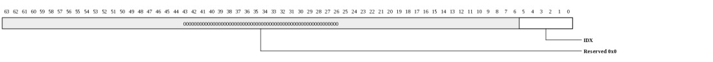
| Bits | Name | Type | Reset | Description
| 5:0 | IDX | RW | 0 | Index into ring to be accessed. Increments automatically on write or read to PULL_DMA_RG_INIT_DAT | |
|---|
Pull DMA Request Generator Init Data (TRIO_PULL_DMA_RG_INIT_DAT: 0x2448)
NOTE: This register only exists in the following devices: Gx9 Gx16 Gx36 Gx72.Read/Write data for Pull DMA Ring Setup
This register is protected at level 2
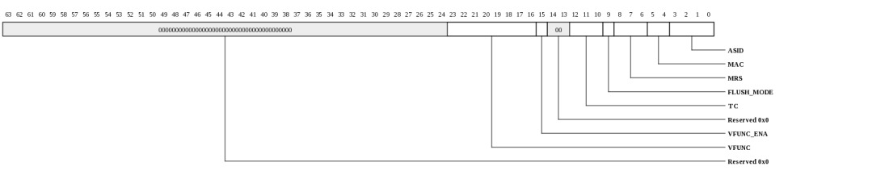
| Bits | Name | Type | Reset | Description
| 23:16 | VFUNC | RW | 0 | Virtual function associated with this ring. | 15 | VFUNC_ENA | RW | 0 | When 1, use the virtual function selected by VFUNC for requests. | 12:10 | TC | RW | 0 | Specifies the traffic class to be used with this ring. | 9 | FLUSH_MODE | RW | 0 | When 1, a TLB fault will result in pull DMA data being dropped when a TLB fault occurs. When 0, the data write will retry until the TLB miss is satisfied. Note that when FLUSH_MODE is 0, software must handle the fault within a reasonable time frame (10's of microseconds) to prevent stalls in other functions including other PULL DMA rings, Tile PIO, and ingress transactions. | 8:6 | MRS | RW | 6 | Specifies the maximum request size for this ring. 0=64, 1=128, ..., 6=4096. Encodings larger than 6 are reserved. If this setting exceeds the value in the MAC_CONFIG register, that value will be used instead. This setting is typically left at 6 to generate the maximum possible request size for the MAC. | 5:4 | MAC | RW | HW | Specifies the MAC associated with this ring. HW resets this field to RING mod constants.TRIO_LOG2_NUM_MACS. | 3:0 | ASID | RW | 0 | Specifies the ASID associated with this ring. | |
|---|
Pull DMA Control (TRIO_PULL_DMA_CTL: 0x2450)
Configuration for pull_dma servicesThis register is protected at level 2
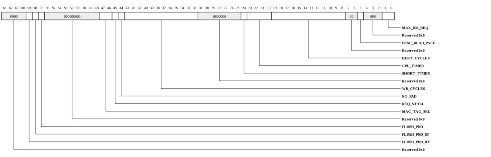
| Bits | Name | Type | Reset | Description
| 59 | FLUSH_PND_RT | RO | 0 | Flush is pending due to a request needing to complete (including response from MAC and writes to Tile memory). | 58 | FLUSH_PND_DF | RO | 0 | Flush is pending due to a descriptor fetch. | 57 | FLUSH_PND | RO | 0 | Set by hardware when a pull DMA ring in FLUSH mode still has descriptor fetches or data requests inflight. This bit must be clear prior to restarting the ring. | 47:46 | MAC_TAG_SEL | RW | 0 | Provides MAC select when accessing the PULL_DMA_TAG_FREE. | 45 | REQ_STALL | RW | 0 | Stall request generator. Typically used when increasing or decreasing tag space. When set to 1, no read requests will be sent to MAC. | 44 | NO_PAD | RW | 0 | Disable pad-to-cacheline writes. This may reduce performance and is only intended for diagnostics purposes. | 43:32 | WB_CYCLES | RW | 3e8h | Number of cycles to wait before flushing the write-combining buffer that's used by pull DMA read completions. A smaller number will reduce the jitter in DMA completion time at the expense of increased Tile-side bandwidth. | 24 | SHORT_TIMER | RW | 0 | Typically used for software testing. When set to 1, the read completion timer will be set to 20,000 cycles for all DMA rings. The PULL_DMA_SHORT_TMR register can be used to shorten the timer only on specific rings. | 23:20 | CPL_TIMER | RW | 6 | Indicates the timeout value for PULL DMA read requests. After this time expires, the request is assumed to be lost. The associated Tile memory data bytes will not be written but the request will continue processing. A PULL-DMA timeout interrupt will be triggered and the associated ring's timeout bit will be set in the PULL_DMA_ERR_STS register. | The timeout value is 2^(CPL_TIMER+18) cycles. Thus if trio is operating at 950MHz, a value of 0 corresponds to approximately 0.3ms. And a value of 6 corresponds to approximately 17.7ms. The timer is run sequentially on each pending request, hence it may take multiple timeout periods for a descriptor to be forced to complete. Setting to all 1's disables the completion timer thus the max timer value at 950MHz is 4521.0ms. 19:8 | HUNT_CYCLES | RW | 3e8h | Controls how often "hunt" prefetches are sent. Hunt prefetches are periodically sent for rings that have hunt enabled in order to find valid descriptors. Setting this to a lower value will improve the response time in systems where descriptors posts are not being sent to pull_dma. But smaller numbers will also consume additional request bandwidth, especially when multiple rings are operating in hunt mode. | 5 | DESC_READ_PACE | RW | 1 | When asserted, the pull DMA descriptor engine will pace its read requests to avoid oversubscribing the response network bandwidth. | 1:0 | MAX_DM_REQ | RW | 3 | Maximum number of pull_dma descriptor ring read requests the descriptor manager hardware will allow outstanding to a single ring. | |
|---|
Pull DMA Status (TRIO_PULL_DMA_STS: 0x2458)
Pull DMA statusThis register is protected at level 2
| Bits | Name | Type | Reset | Description
| 13:8 | DATA_DISC_RING | RO | 0 | Contains the ring number corresponding to a PULL_DATA_DISC interrupt. | 5:0 | LAST_INVALID_POST | RO | 0 | Contains the ring number corresponding to a PULL_DMA_POST_ERR interrupt. Updates each time an invalid-post event is detected. | |
|---|
Pull DMA Timeout Status (TRIO_PULL_DMA_TIMEOUT_STS: 0x2460)
Indicates which ring(s) have experienced a request timeout. Bits are cleared by writing a 1.This register is protected at level 2
| Bits | Name | Type | Reset | Description
| 63:0 | PULL_DMA_TIMEOUT_STS | W1TC | 0 | Indicates which ring(s) have experienced a request timeout. Bits are cleared by writing a 1. | |
|---|
Pull DMA Completion Error Status (TRIO_PULL_DMA_CPL_ERR_STS: 0x2468)
Indicates which ring(s) have experienced a completion error. Bits are cleared by writing a 1.This register is protected at level 2
| Bits | Name | Type | Reset | Description
| 63:0 | PULL_DMA_CPL_ERR_STS | W1TC | 0 | Indicates which ring(s) have experienced a completion error. Bits are cleared by writing a 1. | |
|---|
Pull DMA Completion Error Info (TRIO_PULL_DMA_CPL_ERR_INFO: 0x2470)
Contains information for the most recent pull DMA completion error (response from MAC flagged an error).This register is protected at level 2
| Bits | Name | Type | Reset | Description
| 25:24 | ERR_STS | RO | 0 | Indicates error type that was received. |
5:0 | RING | RO | 0 | Contains the ring that encountered the error. | |
|---|
Pull DMA Tag Free (TRIO_PULL_DMA_TAG_FREE: 0x2478)
Provides access to per-MAC pull DMA tag freelist. The MAC is selected by PULL_DMA_CTL.MAG_TAG_SEL. This register is typically used add or remove tags from pull DMA when changing the system's extended tag capability. On a write, the TAG will be added to the freelist. On a read, the freelist is dequeued. Software is responsible for preventing duplicate entries or overrun of the freelist. Software must allow any active pull DMA descriptors to complete prior to reading or writing this register. The maximum number of tags that a given MAC can track is system dependent. However, the TRIO hardware limits the total tag space for pull DMA to 223. The max tag value supported is 222. Any tags used by Tile PIO cannot be used by Pull DMA.This register is protected at level 2
| Bits | Name | Type | Reset | Description
| 8 | TAG_VLD | RO | 0 | When 1, the TAG field is valid. When 0, the freelist is empty. Ignored on write. | 7:0 | TAG | RW | 0 | Tag to be queued or dequeued to/from freelist. | |
|---|
Pull DMA Short Timer (TRIO_PULL_DMA_SHORT_TMR: 0x2480)
Shorten the DMA timer on specific ringsThis register is protected at level 2
| Bits | Name | Type | Reset | Description
| 63:0 | SHORT_TIMER | RW | 0 | When set to 1, the read completion timer will be set to 8 cycles per request for the associated DMA ring. This can be used to force all requests for a given ring to time out quickly when a request on a ring has encountered a timeout and all subsequent requests are expected to likewise timeout. This should only be used when the remaining requests are not expected to complete. Software must first freeze the associated DMA ring before enabling this bit. Then, after setting this bit, software may use a PULL_DMA_CTL.FLUSH operation to clear out the ring. | |
|---|
Map Memory Region Controls (TRIO_MAP_MEM_CTL: 0x2488)
Global controls for map-memory regions.This register is protected at level 2
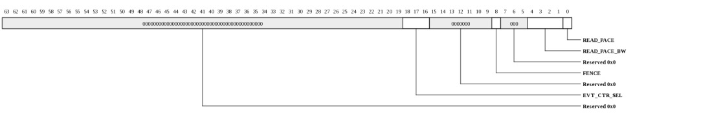
| Bits | Name | Type | Reset | Description
| 18:16 | EVT_CTR_SEL | RW | 0 | Indicates which map event counter should be selected (one counter is shared amongst all MAP_MEM_CTL.EVT_CTR_SEL events). The counter is MAP_STAT_CTR |
8 | FENCE | RW | 0 | When written with a 1, a coherence fence is initiated. Hardware will clear the bit once all older MAP-MEM/SQ writes are visible to Tile software. To also insure that reads have completed, software must use the PUSH_DMA_CTL.FENCE after the MAP_MEM_CTL.FENCE has completed. | 4:1 | READ_PACE_BW | RW | 3 | Controls the read pace bandwidth. Larger numbers result in lower bandwidth provisioned for Tile memory reads. Utilization is approximately 5/(5+N) so Setting to 3 corresponds to approximately 63% utilization. Setting to 4 corresponds to approximately 55% utilization. This can typically be left at 3 unless the system simultaneously has high bandwidth push DMA in which case 9 is typically a more appropriate setting. | 0 | READ_PACE | RW | 1 | When asserted, the reads will pace their Tile memory read requests to avoid oversubscribing the response network bandwidth. | |
|---|
Map Memory Region Flush Mode Control (TRIO_MAP_MEM_FLUSH_MODE: 0x2490)
Provides TLB fault handling control over individual ASIDs. This applies both to MAP_MEM and MAP_SQ regions.This register is protected at level 2
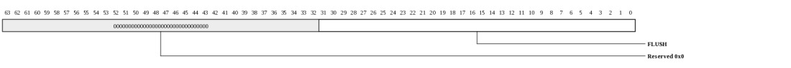
| Bits | Name | Type | Reset | Description
| 31:0 | FLUSH | RW | 0 | When a TLB fault occurs on a map region write or read, if the associated ASID's FLUSH bit is a set the access will be directed to the PANIC_PA effectively flushing the transaction. | |
|---|
Push DMA Diag Control (TRIO_PUSH_DMA_DIAG_CTL: 0x2500)
Configuration for Push DMA diagnostics functionsThis register is protected at level 2
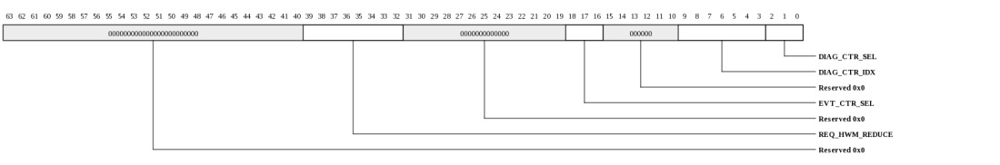
| Bits | Name | Type | Reset | Description
| 39:32 | REQ_HWM_REDUCE | RW | 0 | Controls the maximum number of outstanding SDN reads. This register is for diagnostics only. Setting to other than the default value has unpredictable results. | 18:16 | EVT_CTR_SEL | RW | 0 | Indicates which Push DMA performance counter should be selected (one counter is shared amongst all PUSH_DMA_DIAG_CTL.EVT_CTR_SEL events). The counter is PUSH_DMA_STAT_CTR |
9:3 | DIAG_CTR_IDX | RW | 0 | Index into counter type being accessed. | 2:0 | DIAG_CTR_SEL | RW | 0 | Select set of internal counters to be read. The current value of the counter will be reflected in PUSH_DMA_DIAG_STS.DIAG_CTR_VAL |
|
|---|
Push DMA Stats Counter (TRIO_PUSH_DMA_STAT_CTR: 0x2508)
Provides count of event selected by PUSH_DMA_DIAG_CTL.EVT_CTR_SEL with read-to-clear functionality.This register is protected at level 1
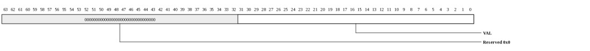
| Bits | Name | Type | Reset | Description
| 31:0 | VAL | RW | 0 | Contains the value of the counter being accessed by PUSH_DMA_DIAG_CTL.EVT_CTR_SEL. PUSH_DMA_EVT_CTR Interrupt is asserted when value wraps. | |
|---|
Push DMA Diag Status (TRIO_PUSH_DMA_DIAG_STS: 0x2510)
Push DMA diagnostics statusThis register is protected at level 1
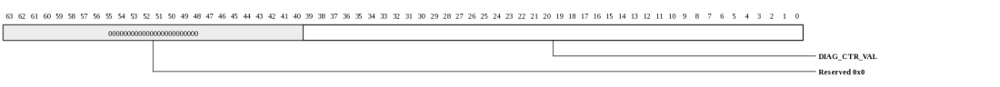
| Bits | Name | Type | Reset | Description
| 39:0 | DIAG_CTR_VAL | RO | 0 | Contains the value of the counter being accessed by PUSH_DMA_CTL.DIAG_CTR_SEL/IDX. | |
|---|
Push DMA Data Latency (TRIO_PUSH_DMA_DATA_LAT: 0x2518)
Provides random sample and record Push DMA data read latencyThis register is protected at level 1
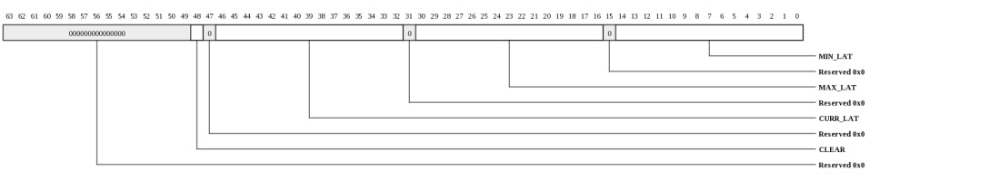
| Bits | Name | Type | Reset | Description
| 48 | CLEAR | WO | 0 | When written with a 1, sets MAX_LAT to zero and MIN_LAT to all 1's. | 46:32 | CURR_LAT | RO | 0 | Contains latency of the most recently sampled transaction. | 30:16 | MAX_LAT | RO | 0 | Contains maximum latency since last clear. | 14:0 | MIN_LAT | RO | 7fffh | Contains minimum latency since last clear. | |
|---|
Push DMA Data Latency (TRIO_PUSH_DMA_DESC_LAT: 0x2520)
Provides random sample and record Push DMA descriptor read latencyThis register is protected at level 1

| Bits | Name | Type | Reset | Description
| 48 | CLEAR | WO | 0 | When written with a 1, sets MAX_LAT to zero and MIN_LAT to all 1's. | 46:32 | CURR_LAT | RO | 0 | Contains latency of the most recently sampled transaction. | 30:16 | MAX_LAT | RO | 0 | Contains maximum latency since last clear. | 14:0 | MIN_LAT | RO | 7fffh | Contains minimum latency since last clear. | |
|---|
Pull DMA Diag Control (TRIO_PULL_DMA_DIAG_CTL: 0x2528)
Configuration for Pull DMA diagnostics functionsThis register is protected at level 2
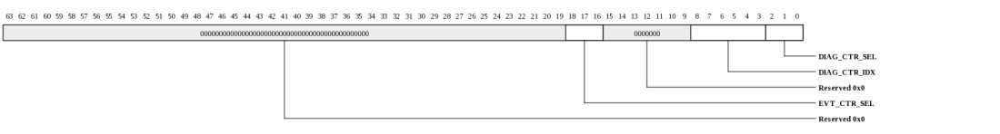
| Bits | Name | Type | Reset | Description
| 18:16 | EVT_CTR_SEL | RW | 0 | Indicates which Pull DMA performance counter should be selected (one counter is shared amongst all PULL_DMA_DIAG_CTL.EVT_CTR_SEL events). The counter is PULL_DMA_STAT_CTR |
8:3 | DIAG_CTR_IDX | RW | 0 | Index into counter type being accessed. | 2:0 | DIAG_CTR_SEL | RW | 0 | Select set of internal counters to be read. The current value of the counter will be reflected in PULL_DMA_DIAG_STS.DIAG_CTR_VAL |
|
|---|
Pull DMA Stats Counter (TRIO_PULL_DMA_STAT_CTR: 0x2530)
Provides count of event selected by PULL_DMA_DIAG_CTL.EVT_CTR_SEL with read-to-clear functionality.This register is protected at level 1

| Bits | Name | Type | Reset | Description
| 31:0 | VAL | RW | 0 | Contains the value of the counter being accessed by PULL_DMA_DIAG_CTL.EVT_CTR_SEL. PULL_DMA_EVT_CTR Interrupt is asserted when value wraps. | |
|---|
Pull DMA Diag Status (TRIO_PULL_DMA_DIAG_STS: 0x2538)
Pull DMA diagnostics statusThis register is protected at level 1
| Bits | Name | Type | Reset | Description
| 63:0 | DIAG_CTR_VAL | RO | 0 | Contains the value of the counter being accessed by PULL_DMA_CTL.DIAG_CTR_SEL/IDX. | |
|---|
Pull DMA Data Latency (TRIO_PULL_DMA_DATA_LAT: 0x2540)
Provides random sample and record Pull DMA MAC data read latencyThis register is protected at level 1

| Bits | Name | Type | Reset | Description
| 48 | CLEAR | WO | 0 | When written with a 1, sets MAX_LAT to zero and MIN_LAT to all 1's. | 46:32 | CURR_LAT | RO | 0 | Contains latency of the most recently sampled transaction. | 30:16 | MAX_LAT | RO | 0 | Contains maximum latency since last clear. | 14:0 | MIN_LAT | RO | 7fffh | Contains minimum latency since last clear. | |
|---|
Pull DMA Data Latency (TRIO_PULL_DMA_DESC_LAT: 0x2548)
Provides random sample and record Pull DMA descriptor read latencyThis register is protected at level 1

| Bits | Name | Type | Reset | Description
| 48 | CLEAR | WO | 0 | When written with a 1, sets MAX_LAT to zero and MIN_LAT to all 1's. | 46:32 | CURR_LAT | RO | 0 | Contains latency of the most recently sampled transaction. | 30:16 | MAX_LAT | RO | 0 | Contains maximum latency since last clear. | 14:0 | MIN_LAT | RO | 7fffh | Contains minimum latency since last clear. | |
|---|
PULL DMA Write Latency (TRIO_PULL_DMA_WRITE_LAT: 0x2550)
Provides random sample and record of PULL DMA SDN write latency.This register is protected at level 1

| Bits | Name | Type | Reset | Description
| 48 | CLEAR | WO | 0 | When written with a 1, sets MAX_LAT to zero and MIN_LAT to all 1's. | 46:32 | CURR_LAT | RO | 0 | Contains latency of the most recently sampled transaction. | 30:16 | MAX_LAT | RO | 0 | Contains maximum latency since last clear. | 14:0 | MIN_LAT | RO | 7fffh | Contains minimum latency since last clear. | |
|---|
MAP Stats Counter (TRIO_MAP_STAT_CTR: 0x2560)
Provides count of event selected by MAP_MEM_CTL.EVT_CTR_SEL with read-to-clear functionality.This register is protected at level 1

| Bits | Name | Type | Reset | Description
| 31:0 | VAL | RW | 0 | Contains the value of the counter being accessed by MAP_MEM_CTL.EVT_CTR_SEL. The MAP_EVT_CTR Interrupt is asserted when value wraps. | |
|---|
MAP SDN Latency (TRIO_MAP_LAT: 0x2568)
Provides random sample and record of map write latency.This register is protected at level 1

| Bits | Name | Type | Reset | Description
| 48 | CLEAR | WO | 0 | When written with a 1, sets MAX_LAT to zero and MIN_LAT to all 1's. | 46:32 | CURR_LAT | RO | 0 | Contains latency of the most recently sampled transaction. | 30:16 | MAX_LAT | RO | 0 | Contains maximum latency since last clear. | 14:0 | MIN_LAT | RO | 7fffh | Contains minimum latency since last clear. | |
|---|
Push DMA Diag State (TRIO_PUSH_DMA_DIAG_FSM_STATE: 0x2570)
Push DMA diagnostics stateThis register is protected at level 2
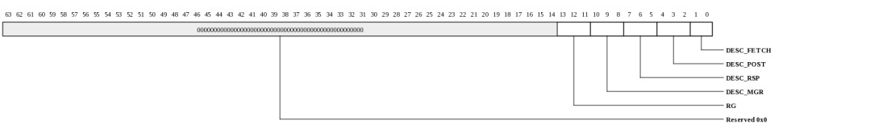
| Bits | Name | Type | Reset | Description
| 13:11 | RG | RO | 0 | Request generator state | 10:8 | DESC_MGR | RO | 0 | Descriptor manager state. | 7:5 | DESC_RSP | RO | 0 | Descriptor response state. | 4:2 | DESC_POST | RO | 0 | Descriptor post state. | 1:0 | DESC_FETCH | RO | 0 | Descriptor fetch state. | |
|---|
Pull DMA Diag State (TRIO_PULL_DMA_DIAG_FSM_STATE: 0x2578)
Pull DMA diagnostics stateThis register is protected at level 2
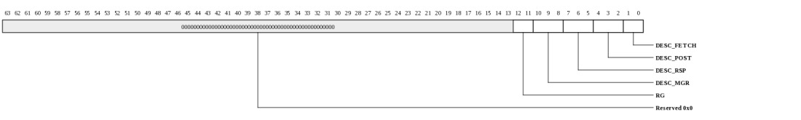
| Bits | Name | Type | Reset | Description
| 12:11 | RG | RO | 0 | Request generator state | 10:8 | DESC_MGR | RO | 0 | Descriptor manager state. | 7:5 | DESC_RSP | RO | 0 | Descriptor response state. | 4:2 | DESC_POST | RO | 0 | Descriptor post state. | 1:0 | DESC_FETCH | RO | 0 | Descriptor fetch state. | |
|---|
MAP Diag State (TRIO_MAP_DIAG_FSM_STATE: 0x2580)
MAP diagnostics stateThis register is protected at level 2
| Bits | Name | Type | Reset | Description
| 10:7 | RSH | RO | 0 | RSHIM interface state. Zero when idle. | 6:3 | RDQ | RO | 0 | Read queue state. Zero when idle. | 2:0 | WRQ | RO | 0 | Write queue state. Zero when idle. | |
|---|
Tile PIO status (diagnostics) (TRIO_TILE_PIO_DIAG_STS: 0x2588)
Diagnostics information for Tile PIOThis register is protected at level 1
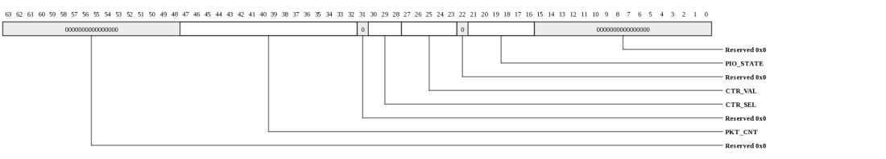
| Bits | Name | Type | Reset | Description
| 47:32 | PKT_CNT | RW | 0 | Contains a count of the packets sent for the region selected by CTR_SEL. | 30:28 | CTR_SEL | RW | 0 | Selects the PIO region for the CTR_VAL field and the PKT_CNT field. | 27:23 | CTR_VAL | RO | 0 | Contains the counter value for the FIFO selected by CTR_SEL. | 21:16 | PIO_STATE | RO | 0 | Contains the state of the PIO dispatch engines. | |
|---|
MAC Interface Diag Status (TRIO_MI_DIAG_STS: 0x2590)
MI diagnostics statusThis register is protected at level 2
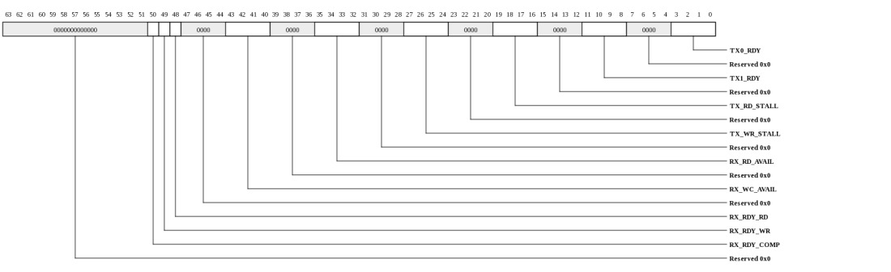
| Bits | Name | Type | Reset | Description
| 50 | RX_RDY_COMP | RO | 0 | TRIO ready for a completion | 49 | RX_RDY_WR | RO | 0 | TRIO ready for a write | 48 | RX_RDY_RD | RO | 0 | TRIO ready for a read | 43:40 | RX_WC_AVAIL | RO | 0 | Associated MAC has a write or completion available | 35:32 | RX_RD_AVAIL | RO | 0 | Associated MAC has a read available | 27:24 | TX_WR_STALL | RO | 0 | Associated MAC is stalling writes | 19:16 | TX_RD_STALL | RO | 0 | Associated MAC is stalling reads | 11:8 | TX1_RDY | RO | 0 | Associated MAC is ready for a completion | 3:0 | TX0_RDY | RO | 0 | Associated MAC is ready for a request | |
|---|
Map Memory Region Setup (TRIO_MAP_MEM_SETUP: 0x3000-0x33e7 stride: 32)
Configuration of the associated memory region. There is one set of SETUP/BASE/LIM registers for each of the map regions with each register set consuming 32-bytes of register space (the 4th location in each block of 4 registers is unused).This register is protected at level 2
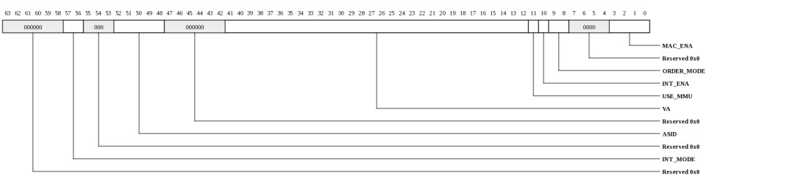
| Bits | Name | Type | Reset | Description
| 57:56 | INT_MODE | RW | 0 | Interrupt mode. When INT_ENA is 1, this controls the behavior of the associated interrupt vector. |
52:48 | ASID | RW | 0 | ASID associated with this region. | 41:12 | VA | RW | 0 | Base VA associated with this region. | 11 | USE_MMU | RW | 0 | When 1, the MMU table will be used for IO address to Tile physical address translation rather than using the TLB. | 10 | INT_ENA | RW | 0 | Interrupt enable. When 1, the interrupt vector is enabled for the region and reads/writes to the first 64-bytes will be directed to the MAP_MEM_INT* registers. | 9:8 | ORDER_MODE | RW | 0 | Ordering type for this region. |
3:0 | MAC_ENA | RW | 0 | Enable the region. When 0, accesses from the associated MAC will not be mapped to the associated region. Multiple MACs may be assigned to the same region if they share a common global IO address space. | |
|---|
Map Memory Base Address (TRIO_MAP_MEM_BASE: 0x3008-0x33ef stride: 32)
Base address of the associated memory region. There is one register for each region.This register is protected at level 2
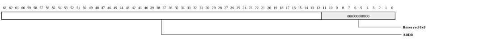
| Bits | Name | Type | Reset | Description
| 63:12 | ADDR | RW | 0 | Base page address. An IO address must be greater than or equal to this address to be accepted in the region. The Tile-side virtual address is computed as (MAP_MEM_SETUP.VA + IO_ADDRESS - MAP_MEM_BASE.ADDR). | |
|---|
Map Memory Limit Address (TRIO_MAP_MEM_LIM: 0x3010-0x33f7 stride: 32)
Limit address of the associated memory region. There is one register for each region.This register is protected at level 2

| Bits | Name | Type | Reset | Description
| 63:12 | ADDR | RW | 0 | Limit page address. An IO address must be less than or equal to this address to be accepted in the region. The low 12 bits of the IO address are ignored for the limit check (i.e. the low 12 bits of MAP_MEM_LIM.ADDR are treated as 1's.) | |
|---|
Map SQ Control (TRIO_MAP_SQ_CTL: 0x3400)
Provides direct control over MAP SQ FIFOsThis register is protected at level 2
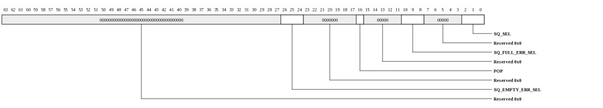
| Bits | Name | Type | Reset | Description
| 26:24 | SQ_EMPTY_ERR_SEL | RO | 0 | Indicates the most recent SQ FIFO that had no descriptor when an incoming read or write matched the region. | 16 | POP | WO | 0 | When written with a 1, the FIFO selected by SQ_SEL will be dequeued. | 10:8 | SQ_FULL_ERR_SEL | RO | 0 | Indicates the most recent SQ FIFO that was overflowed when the SQ_FULL_ERR is triggered. | 2:0 | SQ_SEL | RW | 0 | Select SQ to be accessed. | |
|---|
Map SQ Doorbell Format (TRIO_MAP_SQ_DOORBELL_FMT: 0x3400)
This describes the format of the write-only doorbell register that exists in the last 8-bytes of the MAP_SQ_BASE/LIM range. This register is only writable from PCIe space. Writes to this register will not be written to Tile memory space and thus no IO VA translation is required if the last page of the BASE/LIM range is not otherwise written.This register is protected at level 2
| Bits | Name | Type | Reset | Description
| 1 | POP | WO | 0 | When written with a 1, the descriptor at the head of the associated MAP_SQ's FIFO will be dequeued. | 0 | DOORBELL | WO | 0 | When written with a 1, the associated MAP_SQ region's doorbell interrupt will be triggered once all previous writes are visible to Tile software. | |
|---|
Map SQ Region Setup (TRIO_MAP_SQ_SETUP: 0x3408-0x34ef stride: 32)
Configuration of the associated sq region. There is one set of SETUP/BASE/LIM registers for each of the 8 map regions with each register set consuming 32-bytes of register spaceThis register is protected at level 2
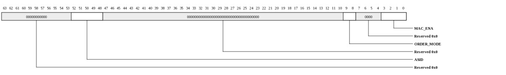
| Bits | Name | Type | Reset | Description
| 52:48 | ASID | RW | 0 | ASID associated with this region. | 9:8 | ORDER_MODE | RW | 0 | Ordering type for this region. |
3:0 | MAC_ENA | RW | 0 | Enable the region. When 0, accesses from the associated MAC will not be mapped to the associated region. Multiple MACs may be assigned to the same region if they share a common global IO address space. | |
|---|
Map SQ Base Address (TRIO_MAP_SQ_BASE: 0x3410-0x34f7 stride: 32)
Base address of the associated sq region. There is one register for each region.This register is protected at level 2

| Bits | Name | Type | Reset | Description
| 63:12 | ADDR | RW | 0 | Base page address. An IO address must be greater than or equal to this address to be accepted in the region. | |
|---|
Map SQ Limit Address (TRIO_MAP_SQ_LIM: 0x3418-0x34ff stride: 32)
Limit address of the associated memory region. There is one register for each region.This register is protected at level 2

| Bits | Name | Type | Reset | Description
| 63:12 | ADDR | RW | 0 | Limit page address. An IO address must be less than or equal to this address to be accepted in the region. The low 12 bits of the IO address are ignored for the limit check (i.e. the low 12 bits of MAP_SQ_LIM.ADDR are treated as 1's.) | |
|---|
MMU Table (TRIO_MMU_TABLE: 0x3e00)
Provides read/write access to the MMU table that provides IO address to Tile PA translations for MAP_MEM regions that have their USE_MMU bit set. Reads are performed by first setting up the ENTRY_SEL field with NW set to 1.This register is protected at level 2
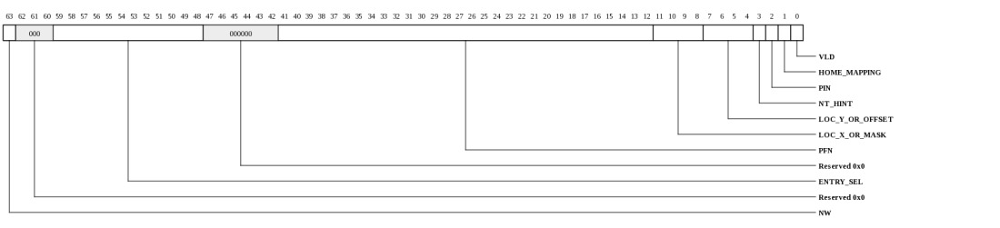
| Bits | Name | Type | Reset | Description
| 63 | NW | WO | 0 | When written with a 1, the MMU entry will not be modified. Set this when writing the ENTRY_SEL field in preperation for a read. | 59:48 | ENTRY_SEL | RW | 0 | Selects entry to be accessed for writes and reads. | 41:12 | PFN | RW | 0 | Physical Frame Number | 11:8 | LOC_X_OR_MASK | RW | 0 | X-coordinate of home Tile when page is explicitly homed (HOME_MAPPING = 1). AMT mask when HOME_MAPPING = 0. | 7:4 | LOC_Y_OR_OFFSET | RW | 0 | Y-coordinate of home Tile when page is explicitly homed (HOME_MAPPING = 1). AMT offset when HOME_MAPPING = 0. | 3 | NT_HINT | RW | 0 | NonTemporal Hint. Device services may use this hint as a performance optimization to inform the Tile memory system that the associated data is unlikely to be accessed within a relatively short period of time. Read interfaces may use this hint to invalidate cache data after reading. | 2 | PIN | RW | 0 | When asserted, only the IO pinned ways in the home cache will be used. This attribute only applies to writes. | 1 | HOME_MAPPING | RW | 0 | When 0, physical addresses are hashed to find the home Tile. When 1, an explicit home is stored in LOC_X,LOC_Y. | 0 | VLD | RW | 0 | Entry valid bit. When 0, an address that requires this translation will be rejected resulting in an MMU_ERROR interrupt. | |
|---|
MMU Control (TRIO_MMU_CTL: 0x3e08)
Global settings for MMU Table.This register is protected at level 2
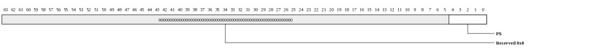
| Bits | Name | Type | Reset | Description
| 4:0 | PS | RW | 4 | Page size for all entries in the MMU table. Size is 2^(PS+12) so 0=4 kB, 1=8 kB, 2=16 kB ... 30=4096 GB. The max supported page size is 30. | |
|---|
TLB MAP Read Exception (TRIO_TLB_MAP_RD_EXC: 0x3f00)
Captures exception information on MAP MEM or SQ Read TLB misses. Software must provide a valid translation to allow forward progress of the transaction.This register is protected at level 2
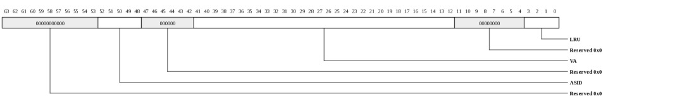
| Bits | Name | Type | Reset | Description
| 52:48 | ASID | RO | 0 | Contains the ASID for the last miss. | 41:12 | VA | RO | 0 | Contains the virtual address for the last miss. | 3:0 | LRU | RO | 0 | Contains the suggested replacement pointer for filling a new TLB entry. | |
|---|
TLB MAP Write Exception (TRIO_TLB_MAP_WR_EXC: 0x3f08)
Captures exception information on MAP MEM or SQ Write TLB misses. Software must provide a valid translation to allow forward progress of the transaction.This register is protected at level 2

| Bits | Name | Type | Reset | Description
| 52:48 | ASID | RO | 0 | Contains the ASID for the last miss. | 41:12 | VA | RO | 0 | Contains the virtual address for the last miss. | 3:0 | LRU | RO | 0 | Contains the suggested replacement pointer for filling a new TLB entry. | |
|---|
TLB PULL DMA Exception (TRIO_TLB_PULL_DMA_EXC: 0x3f10)
Captures exception information on PULL DMA TLB misses. Software must provide a valid translation to allow forward progress of the transaction. Other rings may become blocked while the TLB miss is being handled.This register is protected at level 2

| Bits | Name | Type | Reset | Description
| 61:56 | RING | RO | 0 | Contains the ring for the last miss. | 52:48 | ASID | RO | 0 | Contains the ASID for the last miss. | 41:12 | VA | RO | 0 | Contains the virtual address for the last miss. | 3:0 | LRU | RO | 0 | Contains the suggested replacement pointer for filling a new TLB entry. | |
|---|
TLB PUSH DMA Exception (TRIO_TLB_PUSH_DMA_EXC: 0x3f18)
Captures exception information on PUSH DMA TLB misses. Software must provide a valid translation to allow forward progress of the ring.This register is protected at level 2

| Bits | Name | Type | Reset | Description
| 61:56 | RING | RO | 0 | Contains the ring for the last miss. | 52:48 | ASID | RO | 0 | Contains the ASID for the last miss. | 41:12 | VA | RO | 0 | Contains the virtual address for the last miss. | 3:0 | LRU | RO | 0 | Contains the suggested replacement pointer for filling a new TLB entry. | |
|---|
TLB Control (TRIO_TLB_CTL: 0x3ff8)
TLB Controls.This register is protected at level 2

| Bits | Name | Type | Reset | Description
| 0 | MTLB_FLUSH | WO | 0 | When written with a one, the micro TLBs will be flushed. This is used, for example, when a mapping has been changed so any cached TLB entries need to be flushed. | |
|---|
TLB Table (TRIO_TLB_TABLE: 0x4000-0x5fff)
TLB table. This table consists of 512 TLB entries. Each entry is two registers: TLB_ENTRY_ADDR and TLB_ENTRY_ATTR. This register definition is a description of the address as opposed to the registers themselves.This register is protected at level 2

| Bits | Name | Type | Reset | Description
| 12:8 | ASID | RW | 0 | Address space identifier (IOTLB number). | 7:4 | ENTRY | RW | 0 | Selects which TLB entry is accessed. | 3 | IS_ATTR | RW | 0 | Selects TLB_ENTRY_ADDR vs TLB_ENTRY_ATTR. | |
|---|
TLB Entry VPN and PFN Data (TRIO_TLB_ENTRY_ADDR: 0x4000-0x5ff7 stride: 16)
Read/Write data for the TLB entry's VPN and PFN. When written, the associated entry's VLD bit will be cleared.This register is protected at level 2

| Bits | Name | Type | Reset | Description
| 61:32 | VPN | RW | 0 | Virtual Page Number | 29:0 | PFN | RW | 0 | Physical Frame Number | |
|---|
TLB Entry Attributes (TRIO_TLB_ENTRY_ATTR: 0x4008-0x5fff stride: 16)
Read/Write data for the TLB entry's ATTR bits. When written, the TLB entry will be updated. TLB_ENTRY_ADDR must always be written before this register. Writing to this register without first writing the TLB_ENTRY_ADDR register causes unpredictable behavior including memory corruption.This register is protected at level 2

| Bits | Name | Type | Reset | Description
| 51:48 | LRU | RO | 0 | On reads, provides the LRU pointer for the associated ASID. Ignored on writes. | 40:37 | LOC_X_OR_MASK | RW | 0 | X-coordinate of home Tile when page is explicitly homed (HOME_MAPPING = 1). AMT mask when HOME_MAPPING = 0. | 29:26 | LOC_Y_OR_OFFSET | RW | 0 | Y-coordinate of home Tile when page is explicitly homed (HOME_MAPPING = 1). AMT offset when HOME_MAPPING = 0. | 24 | NT_HINT | RW | 0 | NonTemporal Hint. Device services may use this hint as a performance optimization to inform the Tile memory system that the associated data is unlikely to be accessed within a relatively short period of time. Read interfaces may use this hint to invalidate cache data after reading. | 23 | PIN | RW | 0 | When asserted, only the IO pinned ways in the home cache will be used. This attribute only applies to writes. | 20 | HOME_MAPPING | RW | 1 | When 0, physical addresses are hashed to find the home Tile. When 1, an explicit home is stored in LOC_X,LOC_Y. | 7:3 | PS | RW | 1eh | Page size. Size is 2^(PS+12) so 0=4 kB, 1=8 kB, 2=16 kB ... 30=4096 GB. The max supported page size is 30. | 0 | VLD | RW | HW | Entry valid bit. Resets to 1 for the first entry in each ASID. Resets to 0 for all other entries. Clears whenever the associated entry's TLB_ENTRY_ADDR register is written. | |
|---|
Copyright © 2014 Tilera® Corporation. All rights reserved. Printed in the United States of America.
No part of this book may be reproduced, stored in a retrieval system, or transmitted in any form or by any means, electronic, mechanical, photocopying, recording, or otherwise, except as may be expressly permitted by the applicable copyright statutes or in writing by the Publisher.
The following are registered trademarks of Tilera Corporation: Tilera and the Tilera logo. The following are trademarks of Tilera Corporation: Embedding Multicore, The Multicore Company, Tile Processor, TILE Architecture, TILE64, TILEPro, TILEPro36, TILEPro64, TILExpress, TILExpress-64, TILExpressPro-64, TILExpress-20G, TILExpressPro-20G, TILExpressPro-22G, iMesh, TileDirect, TILEmpower, TILEmpower-Gx, TILEncore, TILEncorePro, TILEncore-Gx, TILE-Gx, TILE-Gx16, TILE-Gx36, TILE-Gx64, TILE-Gx100, TILE-Gx3000, TILE-Gx5000, TILE-Gx8000, DDC (Dynamic Distributed Cache), Multicore Development Environment, Gentle Slope Programming, iLib, TMC (Tilera Multicore Components), hardwall, Zero Overhead Linux (ZOL), MiCA (Multicore iMesh Coprocessing Accelerator), and mPIPE (multicore Programmable Intelligent Packet Engine). All other trademarks and/or registered trademarks are the property of their respective owners.
Third-party software: The Tilera IDE makes use of the BeanShell scripting library. Source code for the BeanShell library can be found at the BeanShell website (http://www.beanshell.org/developer.html).
The following is a trademark of Marvell Semiconductor, Inc.: Distributed Switching Architecture (DSA).
This document contains advance information on Tilera products that are in development, sampling or initial production phases. This information and specifications contained herein are subject to change without notice at the discretion of Tilera Corporation.
No license, express or implied by estoppels or otherwise, to any intellectual property is granted by this document. Tilera disclaims any express or implied warranty relating to the sale and/or use of Tilera products, including liability or warranties relating to fitness for a particular purpose, merchantability or infringement of any patent, copyright or other intellectual property right.
Products described in this document are NOT intended for use in medical, life support, or other hazardous uses where malfunction could result in death or bodily injury.
THE INFORMATION CONTAINED IN THIS DOCUMENT IS PROVIDED ON AN "AS IS" BASIS. Tilera assumes no liability for damages arising directly or indirectly from any use of the information contained in this document.